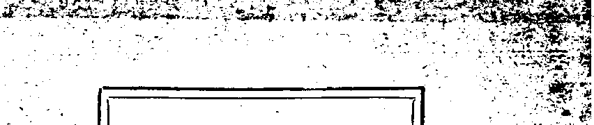

Oct 26, 1921, Vol. m, No.55 every other Im week at 35 Myrtle Arenua, ■^5r Brooklyn, N. F.. 17. S. X
■( Ten Cent* a Copy—*2.00 a Year Canada and Foralga Countriaa, *2.00
' V
mm t wnwcsDAT, acron m, on wbebb m - -
CONTENTS <f the GOLDEN AGE
LABOR AND BCONOMKB
Anew n /tom i?»i o> mr cwt amm km
iWnira — II I >S| {■nDm PNMN *7 toa Bpass _»40
reran era tobtatas - .-------X .Mm fcraM tae UM Brawn 41
A *tatUmi SMfc-AhiaiM M -A BatiMd Wmi--,,----------
Karaiap Mt »q Imp — M .Iha Bmeaia
K«t VefrinOr ^e Fwnwi—_~*r. DtoarfctoaM palaat BMU Banfel
Mpirrtw ^Martes - —- *n <••• to ntaratra
NtauMCMraflt with* Mind ’8M« MM LMrtB BM _.43
Bawm Sjracra ----------------■ *■ tartera lua Kitraraprtf
ipra Mehta toe CaMtry Baahs 39, Ul to Ben Itraff ------
Dm DM net toK Prapeto ..All Mm toran <M Mhtafcra ,
Mwr AM fra Travers ..... ,, m a to ntoairrr .. - - *'
POLITICAL—DOMESTIC AND foreign
AGRICULTURE AND HUSBANDRY
Ami Aaericu Dasrat .............- — --------
HOME AND HEALTH iBOMiog Dm at Badtara 47 fcHra «r Drap -
atopnetfe Mull* , „, .„B1 fctopMNi OKprteMM . ,. ... BT
tab Ara Mat CM---------« WW Mra A to Caihp
Oto 9t Drop - ■ !,..■■ । W
• RELIGION AND"PHILOSOPHY
Massed RMe Btatfn n.mM Itomn to braMp W8> PsM •----> MtoKta M UtiBMiO Che MM twra ZratAto 91
to (toraiar Beds Opd9 BB Wbei ths Mm tf hat BhaB Bar.
Brad FyraaM • «* Amm ' "M Ba Btffl". a tom Qato
■m to Bast Uni BBatotato wm BbbB 11
af Mp - -- - x Spirtt asB Btoraa tom Bpento
IB to» Ttoa < the BsB Krawrliitp aid DMsto — •*
M Be JBDMaH ......W* h—III Btole -- -
fxrKsLsriPT. “Dwt Tw CWTS^ Con — >340 a Ybbb vounow onicsfl: BHHeB: M Cnran Tames, Lancaster Gate, London W. 2; Osaasdirara: 270 Dmdaa Bt. Wa Toronto. Ontario: Aiaetralaeirm: 493 ColHar St, Mafcmmt, Australia* Maks mUttsar— M TBs flalito A«fc
Triue III Brooklyn, N. Y., Wednesday, October M, Im Number H
By Robert F. GrosseU (U. 8. Treasury)
THE decline in the value of our foreign trade, J- especially of the excess of exports over imports, which from $454,000,000 in December, 1920, dropped to $85,000,000 in April of this year, has had a most important bearing on our economic condition. Unless our surplus manufactured articles and agricultural products can be disposed of in the world’s markets, the effect is sure to react in the form of depression on the economic fabric of the country.
' It is claimed that there is in the world at the present time a surplus of cotton sufficient for its needs for two years. Certainly ths condition of the cotton growers of the South is serious. During the war the price of cotton rose to 40c a pound, a rate which the cotton growers had never before dreamed of receiving. The money received by the grower for his crop at this price ■was in most cases promptly spent for automobiles, farm machinery, improvement of farms, or otherwise. When the time came for the cultivation of the next crop loans were usually secured from the banks for that purpose. The 1919 and 1920 crops were raised while prices for labor and other things were at their peak; and when the price of cotton declined to 15c and 12c a pound, the cotton grower found himself faced with the situation of disposing of his product at a price lower than that which it cost him to produce, and with very little demand for it. England has in the past purchased large quantities, of our cotton, but since cotton has been raised so successfully in Egypt, a large part of that country’s production finds its way to England, thus diminishing the need for cotton from the United States. Poland, Germany, and Czechoslovakia need our cotton, but have neither the money nor the credit to secure it. The result is that the farmers of the South are in many cases not able to meet the loans secured from banks on their crops.
To meet this situation the Federal Reserve Banks increased the time limit of agricultural paper from the ninety-day limit to six months, which of course could be renewed at the expiration of that period. In addition to this the War Finance Corporation has undertaken to furnish , credit for the exportation of cotton to the.value of several millions of dollars.
FARMERS ARE MISTAKEN
Undoubtedly the lot of the farmer at the present time is a hard one, and unquestionably they have grievances against banks, but the fault does not lie where they appear to place it. The special object of their attack is the Federal Reserve Banks. They want the Federal Reserve System reorganized with representation of farmers’ interest on the Board. Their ideas have been expressed by the President of the American Farm Bureau Federation as follows:
‘Ht is incumbent upon the bankers of this country so to adjust their business that the farmers may have opportunity to carry on without forced liquidation until. the other fellow comes to his level .of credit and income^ or the farmer is again restored to his proportion in all adjustments.”
Ideas of a similar nature seem to prevail in other quarters, that the banks so proportion their credits to prevailing prices as to stabilize markets, thus preventing the rise and fall of prices. The idea is harmful, as no body of men is able to fix prices of commodities, and especially with respect to their relation to each other. The bank which attempted this, practice would soon find itself loaded v'ith credits' which it could not liquidate, and thus would be forced to close its doors as being unable to transact its normal business for lack of available funds.
The last three months of 1919 witnessed a very rapid expansion of credit, accompanied by a decline in the cash reserves of the Federal Reserve Banks, due largely to the export of gold in settlement of balances accumulated during the war by South America and the Orient Much of this undue expansion of bank credit was used
for speculative purposes; and in November, as by Swiss, Belgian, and other central banks.
1919, an advance in the discount rate was made. But the expansion continued. In January, 1920, another advance in rate was made; and in May, 1920, the rate on commercial paper was advanced to 7 percent at four of the Federal Reserve Banks. These steps were successful in checking the rate of credit expansion in spite of the fact that gold began to come into this country as the result of European countries trying to maintain their credit in America and ’ of the high premium commanded by the dollar in the money markets of the world.
In May, 1920, prices had reached a high level, but early in 1920 the collapse of the Japanese silk market indicated the coming of a turn in events. The public was no longer willing or able to pay the high prices demanded; and a dedine in prices set in, at first gradual, later more rapid, affecting chiefly raw materials and farm products.
A NATIONAL SHOCK-ABSORBER
During the period of expansion, contraction, and depression the Federal Reserve System has acted as a moderator and shock-absorber, checking the rate of expansion in 1920, yet continuing to issue notes and to grant credits required by the business needs of the country, and later preventing the occurrence of a crisis by making gradual liquidations possible.
The experience of the last two years has demonstrated that the Federal Reserve System can stand up under a terrific strain, that it can moderate the impact of economic forces and make possible a transition from a period of reckless expansion to one of liquidation without a disastrous crash. At the same time events emphasize the fact that the Federal Reserve System can neither produce nor neutralize economic forces, but can only endeavor to moderate their ruthless effect on the economic structure of the country.
The d&couht rate of the Federal Reserve Banka generally six months ago was 7 percent; and the same rate was maintained by the Bank of England chiefly, no doubt, because of the dominating influence of this country in world finance. Within the last sot months the discount rate has been lowered to 6} percent, 6 percent, , and recently to 5| percent; and this change was followed by the Bank of England, the Bank of : France, some of the Scandinavian banks, as well i
fe.
Of course, this lowering of the interest rate makes for easier credits available for industrial enterprises and the speeding np of the business of the world.
BARRINGS NOT TOO LARGS
An erroneous impression exists in soma quarters as to the earnings of the Federal . ’ Reserve Banks. Those earnings depend largely -on the volume of their discounts with member banks and on the discount rate charged. The. -discount rates are determined by the banks, with the approval of the Federal Reserve Board, in accordance with credit conditions that prevail, while the volume of operations of the i Federal Reserve Banks depends on the magni- . fade of the demand for accommodation by member banks, and the amount of credit available to satisfy the demand. The earnings of the banks should be considered in relation to the available funds at their disposal. The present paid in capital of the twelve Federal Reserve Banks is $102/263,000, and surplus $213,824^)00. On the basis of capital alone the earnings for , 1920 were 158.4 percent But those rates of return are practically without meaning, for the Reserve Banks have at tlieir disposal much larger funds on which they pay no interest and । which practically cannot be withdrawn, that is, the reserve deposits of member banks. Those deposits, amounting on the average to $1,835,000,000 in 1920, represent the lawful reserves of the member banks and may not be reduced, except as the member bank's own deposits decline. When these deposits are added to the capital and surplus, the rate of return of the Reserve Banks on their operating funds is 7 percent.
But Federal Reserve Banks have .another source of loanable funds, namely, Federal Reserve notes, which are obligations of the United States Government, and are issued to Federal Reserve Banks against gold or eligible paper, with the limitation that the Banks must keep ’ 40 percent in gold against their note circulation. The franchise tax paid by the Banks may he .. considered as a return io the Government fbr i
lending its credit to the Banks by guaranteeing : the note issues. As related to the notes, net earnings of the Reserve Banks in 1920 constituted 4.7 percent. When all the Banks' loanable funds—capital, surplus, reserve deposits, and notes—are added, it is seen that their earnings constitute but 2.9 percent of the total.
In view of the public character of the Federal Reserve Banks, Congress provided that net earnings of the Banks in excess of 6 percent should be turned over to the Government as a franchise tax. Since Reserve Bank earnings are augmented by an increase in discount rates, and since these rates are determined by public policy, it is but fitting that the earnings above a moderate return on the capital invested should be turned over to the Government; and that is what is done. In 1920 $60,000,000 were paid by the Reserve Banks to the Treasury as a ■ franchise tax. ■
NOT UNFRIENDLY TO FARMERS
Criticism has become quite general, among agricultural interests, of the Federal Reserve Banks that they are unfriendly to agriculture. It might be stated in connection with that view that the Federal Reserve Act provides for a limitation of discount of three months upon maturity of eligible paper, with the exception, however, that notes, drafts, and bills drawn or issued for agricultural purposes or based on livestock having a maturity not exceeding six months, may be discounted in an amount to be limited to the percentage of the assets of the Federal Reserve Bank to be ascertained and fixed by the Federal Reserve Board. Were the criticism above true, the Federal Reserve Board could easily have limited the amount of six months’ agricultural paper which could be discounted by a Federal Reserve Bank to a very small percentage of its total assets. But on the contrary some years ago they fixed the percentage at 99 percent, which offers the fullest possible ae&ommodation to agriculture; and the Board has never changed that percentage.
That heavy loans have been made to agricultural interests in the South is shown by the fact that tl\e Federal Reserve Banks of Atlanta and Richmond’ were both heavy borrowers < during the-latter part of 1920 from other Federal Reserve Banks, and the Federal Re- serve Bank of Richmond has shown loans as high as $25,000,000 from the Federal Reserve
Bank of New York. The total rediscounts during the latter part of April, 1921, with the Federal Reserve Bank of Richmond by National Banks in South Carolina were $12,506,000. They had also borrowed $6,759,000 from the Federal Be-serve Bank on their own collateral, so that the total accommodation granted to National Banks -in South Carolina during the latter part of April, 1921, was $19,265,000, and the total amount loaned by the Federal Reserve Bank to all member banks in that state was on June 30, 1921, $21,105,000. ’
PERPLEXING SITUATION J
Another factor of prime importance to consider in connection with the industrial depres- . sion at the present time is that of the breakdown of foreign exchange. The situation is perplex- ’ ing and uncomfortable, and unless some remedy ' is devised to stabilize the foreign exchange market disaster may come in respect to inter- ; national trade. At the present time the situation is working very favorably for the German j merchant in that the German Reichsmark, nor- I
mally worth .2382 in U. S. money, has now an
exchange value of slightly over 1c, but its pur- . 1 chasing power in Germany is much more than ;
that. This situation enables the German manu- ,
facturer to produce goods at a smaller cost than
the same goods can lie made in England, United '
States, or elsewhere. England herself is con- . fronted with a threatened invasion of her own :
soil by German goods and is unable to make ■ headway abroad against German competition. ; The situation has been stated in the words of _ an English manufacturer as follows:
“The astounding fact remains that America and Great ■; Britain are the two countries now starving for orders, with millions of unemployed, while Germany, in which ' costs increased more Ilian almost any other country, has , order books filled to overflowing. America, with -mountains of gold, is idle; Germany, with virtually no » gold and with huge debt.-, is getting the trade of the : world.” ’ ■
Until under some approved method the ex- •
al trade on the large scale which present world ! conditions demand and which a steady money -
market would be certain to insure. But the fe exchange question at the present time is a very t . large one and cannot be entered into in detail j here. ..."
Cb
By John Skelton Williams, Ex-Comptroller of the Currency.
MY PURPOSE is to expose the errors that have been made in the administration and use of the Federal Reserve System and to demonstrate the consequences of them that those errors may be avoided hereafter, the operations of the System perfected, and its great purposes fulfilled.
The most important of these purposes is to assure equable and equitable distribution of the money supply of the country that it may be available where and when needed for actual production and legitimate commercial purposes and not accumulated in places and for purposes where it is not needed for legitimate uses, or ‘ is misused either to extort inordinate gain from need or to promote speculation^ destructive to some, and adding nothing to the country's real growth apd progress.
Fortunately, the facts and statements from both sides are of public.record now, and will be printed in tl*e proceedings of the Joint Committee of Congress investigating—especially from the standpoint of Agriculture—the administration of the Federal Reserve System.
try” national lianks in the United States owed . on September 8,1920.
If that additional amount of credit, $1,084,-. j 000,000, had been supplied to them up to that ; u time or during the ensuing twelve months, it p
SYSTEM DESPISES THE COUNTRY BANKS |
The record shows that a year ago, in Septem-her, 1920, when agricultural sections were earnestly pleading for additional help, the national banks of the three big cities of New York, Chicago an<l St. Louis had received accommo-datums (nearly all from the Federal Reserve Banks) through rediscounts and bills payable, to the extent of 24 percent of their total loans and discounts. '
‘ At the same time the national banks known as the '‘country banks", that is to say, the banks outside of the Reserve and Central Reserve cities, had received accommodations in the shap:s’tt£ rediscounts and bills payable for only 10 percent of their total loans and rediscounts.
If the ‘country” banks had been granted accommodations for the same proportion of their tidal assets (excluding rediscounts) as the national Iwtnkh inMie three big cities, they would
is a fair assumption that our country might have been saved billions of the losses we have . suffered, not only from shrinkage of values, but from the violent and sudden collapse, resuiting in disturbance and disaster to producers, fanners and manufacturers without compensation and corresponding • advantage to consumers.
SYSTEM DID NOT ASSIST PROPERLY
I will now submit certain official figures from the annual report of the comptroller of the currency, submitted to the Joint Committee of Congress by me on the 2nd and 3rd ultimo ' (Page 222, Comptroller’s report for 1920) Comparison of the loans and discounts and of money borrowed by rediscounts and bills payable on September 8, 1920, by the National banks of the three cities of New York, Chicago and St. Louis, as compared with the “country” ! National banks; that is to say, all National r
[ banks outside of the Central Reserve and Re-17 serve cities.
tad dtamts toaMewlMa ndlcoaoto> (IndndlRC
New York, Chicago and St. Louis__$3,695,000,000
"country” banks 5,853,000,000
oiuiMjtr dhcoont* and UQaw^Oto
$896,000,000 596,000,000
20%
10.2%
l ave ncrivetl at least instead of..........
$l,630.u00.000
.’w.imooo
which was the total amount of all the "rediscounts and bills payable” which all the “eoun-
These figures show that, although the “conn-try” banks were carrying $2,158,000,000 mon of “loans and discounts" than the national banka in the three big cities, yet the accommodation which they had been able to get from the Federal Reserve Banks whose principal function ■ is to extend aid In times of emergency and : stress, was actually about $300,000,000 less than the accommodation granted to the national ' banks in the three big cities.
Ven rly all the money borrowed by all national banks was obtained from the Federal Reserve Banks, and in making this comparison, I am assuming that the proportion of their total borrowings obtained by the “country" banks from their Federal Reserve Banks was the same as , the proportion of their total borrowings which "■
'■"is
kJ
the hanks in the three big cities got from their - Federal Reserve Banks.
•- ... The official figures also prove that the accom-■ modations obtained by the "country” banks ‘ . (nearly all of which were obtained from the : Federal Reserve Banks) in September, 1919, * were $60,000,000 less than the accommodations obtained by the national banks in the three big cities at the same time.
By September, 1920, the 45 national banks in ■ New York, Chicago and St. Louis were being - accommodated (nearly all from Reserve Banks) .. with $300,000,000 more than all the 7,673 “coun, national banks throughout the IJ. S.
. Comptroller of the Currency Crissinger’s offi-. dal statements show that as late as April 28, 1821, the Federal Reserve System was still actually lending to the 45 national banks in New York, Chicago and St. Louis (over 96 percent going to the banks in New York city and Chicago) on bills payable and rediscounts, in pro-portion.to their total resources approximately twice as much as the System was lending at that . time to aU the "country" national banks, then aggregating 7,732.
I appeal to the same record to furnish, if ■?. desired, further convincing proof of my charges against the Federal Reserve Board and some of the Federal Reserve Banks that the resources of the System were distributed unequa-bly and improvidently, so that great banks at . the financial centers were lavishly supplied with money for use as they saw fit, while “country” banks and their producing customers were cramped and crippled.
- In my testimony before the Congressional . Committee I showed that four or five large banks in New York city were borrowing at one time from the Federal Reserve Bank as much as four or five thousand banks, including both country banks and the larger banks in important western and southern cities, were borrowing fromMjye Federal Reserve Banks, embracing in their respective districts twenty-one ■ great states.
MEAGEB ATO FOB FARMEES -
The Federal Reserve official bulletin of De-1 eember, 192(7, throws light upon the extent to j- which the Federal Reserve Banks were accom-■ modating the agricultural interests of the country in crop-moving time in 1920. Page 1346 of : Jhe bulletin referred to shows that at the end
of October, 1920, the 12 Federal Reserve Banks held of “discounted and of purchased paper” a grand total of ..............$3,100,000,000
of which the “purchased” paper was 299,000,000 nearly all “bankers' acceptances” it is understood mainly New York city banks. But of the aggregate of $3,100,000,000, the total of “agricultural paper” and of "livestock paper” held by all the twelve Federal Reserve Banks, was only ...................... $240,000,000
which is less than.8 percent of the total accommodations granted by the Federal Reserve Banks.
The 8 percent of the total accommodations , granted by the Reserve Banks upon “agricultural and livestock paper” seems very small when we consider that the farmers now represent about 43 percent of our population and when the aggregate value of farm property, according to the last census, is about $77,000,000,000.
From October, 1919, to October, 1920—be-tween these particular dates—the twelve Federal Reserve Banks did INCREASE the amount of their discounts and bills payable with the member banks. The total increase in the average amount of all discounted paper held by the Reserve Banks in the 12 months from October, * 1919, to October,1920, was......$712,000,000
But an analysis shows that 72 percent of this increase, or say...... 512.000,000
was dispensed by the Federal Reserve Banks of Neiv York, Chicago and Cleveland, while the total increase granted in that period by the Federal Reserve Banks to all member banks in nine other great districts, embracing over 90 percent of the total area of the continental United States was only......................$200,000,000,
or 28 percent of the total increase; 72 percent of the increase being dispensed by Reserve banks in the three districts covering less than 10 percent of the territory . ____
The official figures also show that one time' last year the Federal Reserve System waa lending to four banking institutions in New York city an aggregate of about.......$480,000,000.
The loans made to these four banks in New York city amounted to approximately twice as much as the maximum amount loaned at any time during the year 1920 vn "agricultural and livestock paper" by all twelve Federal Reserve Banks.
And yet in the faoe of these facts we find officials of the Federal Reserve System giving the most solemn assurances that the resources of the System have been equitably and impartially distributed!
SYSTEM PLEADED WITH IN VAIN
• In September and October, 19*20, farm organizations and cotton growers, other business men -and Senators and Congressmen held repeated conferences with the Federal Reserve Board and pointed out the disastrous consequences of their policies and urged a relaxation of the pressure which was being exerted. I besought my colleagues to listen to the arguments which were * so forcefully presented to them, and to revise their policies before it should be too late. 1
In a letter to the governor of the Board of October 18.19*20,1 said:
The plans and. policies wliich have aided in bringing about deflation in the great staple commodities should he at onee taken up for consideration and revised as far as may be necessary to meet present and changed conditions. If this is not done speedily, I am fearful as to the consequences wKioh may ensue.
Three days later, in a letter to the Secretary of the Treasury, who was the Chairman of the Federal Reserve Board, I said:
The strain upon the business fabric of the country ia, ' in some respects, unparalleled, and I do feel that ths time has come for the eaercise of such salutary and constructive powers as may be at our command. • * •
The sitnation • • * has become more aggravated of late, and unless relief can be found, an increase in hank failures, I believe, will be inevitable.
The revival of the War Finance Corporation would provide, in my judgment, a much-needed steadying influence at this time.
I continued to remonstrate against the Board’s unwise policies, both in Board meetings and in written communications. In a letter to the Governor of the Board, January 17,1921,1 said;
It is entirely true that I wish to go on record. • • • I wfcfli to be recorded definitely as having done my utmost to urge our Board to saving or palliative action and ’consideration for the troubles of the public and thereby at lea-"t free myself from the censure that will fall on us with crushing force if ve emit any possible effort to mitigate present and real suffering or to avert disaster, although the consideration of personal exculpation is, of course, slight and negligible in comparison with my main purple and hope, which are to obtain from the Board xonie^rompt and effective action for relief.
MERCILESS PRESSURE BY THB SYSTEM
I now ask your attention to the manner in
which the Federal Reserve Board responded to S the earnest pleas for relief and a revision at '■ ■ their contraction policies, which were made to , theiu September and October last. You will sea . that their answer was practically—more pres-s-ave—contraction—diffnlion! '4 <
On October 15,1920. the total amount of “bills -discounted and paper purchased” by all twelve > Federal Reserve Banks amounted to..................$3,092,000300
By November 19,1920, this amount :
had been contracted by......... 145,000,000
leaving the total................. 2,947,000,000
By December 17, 1920, the reducturn as compared with October 15, 1920, amounted to.............. 263,000,000
the Reserve System continuing to • .
call in loans. By January 21, 1921,
the total amount of discounts and -purchased paper which the-Be-
serve Banks had outstanding had
been reduced as compared with .
October 15 by............ 443,000,000
By February 18, 1921, this con- ' traction amounted to............ 562,000,000
By March 18,1821, the Board’s policies had caused a reduction in discounted and bought paper . amounting to............ 746,000,000
On April 29, 1921, the Board in >
reporting the complete “success” of the policy of deflation and contraction showed that the total amount o f hills discounted and paper purchased had been reduced to ............................ 2,167,000,000
which was an actual contraction since October 15, 1920, of........$925,060,000
During the 5J mouths between November 17, ‘ 1920, and April 28, 1921, while the R.-^erve System was forcing im-iubtr hanks at ruinous costs to pay up or it-diwe their loai-s with the ■’ Reserve Banks In* the sum of $720,000,000, the withdrawals of deposits which the itatkMutl banks alone Lad to meet, in that particular pe-nod, was $2.110300300, in addition to the shrinkage in deposits of $905,000,000 which had ., already occurred, during “deflation”, in the 10J . . months from January 1,1920, to November 17, and the agricultural and business interests of the country, as a natural consequence of such -drastic and destructive pressure, had been dragged into the depths of the greatest depression Ulis country has ever seen.
The morning papers tell us that according to Government estimates about six million unemployed and hungry men and women are now walking the streets looking for work.
These may be ascribed as some results of the Federal Reserve Board’s “successful” policies.
On January 1, 1920, the total deposits of all national banks in the United States amounted to $17,866,000,000 At the time of the call, April 28,1921, the total deposits of all national banks were..'......... 14,851,000,000
This shows the terrific shrinkage in sixteen months of...... 3,015,000,000
On January 2, 1920, the total amount of “rediscounted and purchased paper” held by the twelve Federal Reserve Banks ‘
was .............. 2,805,000,000
On April 28, 1921, the total amount of bills discounted and purchased paper held by all the twelve Federal Reserve Banks was ......................... 2,167,000,000
These figures prove that in the “deflation” period from January 1, 1920, to April 28, 1921, the national banks of the United States were required to meet a withdrawal of deposits amounting to the huge sum of........ 3,015,000,000
The only means they had for meeting these huge withdrawals without drawing down their reserves, was, first, by selling their Liberty Bonds and other securities; second, by enforcing the payment and collection of loans; third, by borrowing money, practically the only source to look to being the Federal Reserve Banks.
SYSTEM SHOULD HAVE AIDED BORROWERS
It was the purpose and theory of the framers of the. Federal Reserve Act that in such a crisis as that through which we have passed the Reserve Banks should aid by extending the needed credits and prevent the slaughter of Liberty Bonds and other securities, and the wholesale calling ih of ^oans. But we find here that during this precise period, the twelve Federal Reserve Banks instead of increasing accommodation to enable banks to meet the enormous withdrawals of deposits without forcing borrowers to the wall, and without exacting the payment of loans, not only refused to grant the increased accommodations so obviously needed, but called in their outstanding loans and discounts to the extent of $638,000,000 net, between January 1, 1920, and April 28, 1921. These are cold historical facts which the Federal Reserve Board cannot deny or shake.
It should be noted that the withdrawals of deposits to which I have referred, of $3,015,000,000, applies only to the national banks. It ia quite probable that the reduction in the deposits of state banks and trust companies amount to as much again, making the total probable reduction of deposits in the period named about Six Billion Dollars; and while this huge reduction in deposits was straining the banks, the Federal Reserve System instead of easing the situation by at least refraining from calling in loans, actually contracted its advances to both national and state banks and trust companies from $2,805,000,000 in January, 1920, to $2,167,000,000 in April, 1921.
A NATIONAL SCANDAL
I am told that a member of Congress recently described the attitude of the Federal Reserve Board succinctly as follows:
“If you accuse the Board of having brought about this great debacle, the member* deny that they are in any way responsible, but if you congratulate the Board on having knocked the bottom out of the markets and oa having raised the gold ratio to a point that is in itself a national scandal, they one and all take off their hata, bow solemnly and say: *We thank you. We did it’ ”
In two speeches, one on April 15,1921, before the People’s Reconstruction League at Washington, and the other at Augusta, Ga., on July 14, before the Board of Commerce, I made public certain facts in regard to the methods and . policies of the Federal Reserve Board and the operations of the Federal Reserve Banks, which resulted in the prompt introduction in both Houses of Congress of resolutions calling for an investigation of the Federal Reserve Board.
The Board then got busy.. Oa the night of July 19, 1921, the Board gave to the press a six-hundred word statement in which, in expressing their tender sympathy for the people in the crushing losses which had been sustained, following the carrying out of the policies of "Deflation” they said:
"The Federal Reserve Board and the Federal Reserve bank* recognize the urgency for rendering all proper assistance to these important interests (cotton producers and dealers) during such abnormal times," and made the much belated announcement, that effective at once:
“The Federal Reserve banks, in addition to credits already extended, are able and stand ready to extend further credit for the purpose of harvesting and mar-hating the coming crop in whatever amount may legitimately be required.” -
Thereupon about July 31, rates on agricultural and commercial paper were reduced from 6 to 5} percent in four Federal Reserve Districts including Boston, New York, Philadelphia and San Francisco.
On July 29th, 1921, the President issued a statement from the White House regarding measures which had been taken for the relief of the financial and business situation in which he said:,
••Perhaps the most important development has been the action taken by the Federal Reserve banks in reduc-ing'discount rates. This action is calculated to relieve the stagnation of business.” * * ♦
■ THE SYSTEM RETREATS
July 26 had been set by the Joint Congressional Commission as the day for me to appear before them in connection with the criticisms which I had made against the Board's policies, in my Augusta, Ga., speech, but at the last moment and after .1 had arrived in Washington for the purpose of going before the Joint Committee, the hearing was adjourned for one week —as I am informed, at the urgent request of the Reserve Board. Commenting upon my invitation to attend and the adjournment for a week, the Manufacturers Record of August 11, 1921, said, editorially:
“Instantly, we may say, following news that there would be a Congressional investigation, the Board drew over its lien’s skin the mantle of a lamb.
“Ijt would not be able to answer Hr. Williams on the date originally set for the hearing, it averred, but it could a week later. ’
“This significant fact stands out: Mr. Williams, reinforced by public opinion from all over the United States, had Scored a tremendous victory before he even took the witness^ stand. His Augusta speech had forced the issue. A
“Rather than meet it, the Board hurriedly and drastically reversed itself ail along the line. It (a) saw that rediscount rates were cut; (b) abandoned the system of graduated rates; (c) recoded from drastic liquidation of farm products, urging the various Reserve banks to be liberal hereafter and not to force on the market commodities for which only ruinous prices could be got.”
I could go into detail indefinitely with instances and incidents involving tens and hundreds of millions of dollars, ail cumulative evidence of the truth of my accusations. It is not necessary, I think, to do this. I will content myself with the general statement that each of • the specific instances heretofore cited by me in support of the charge of discrimination, harmful in the end to those in whose favor it was exercised, as well as to those who suffered more immediately by having it directed against them, is a demonstrated, incontestible fact, and that the records show it. ,
It may be worth while, however, to include in this statement a brief summary of a few of the specific criticisms which I have made against the administration of the Federal Reserve System, the absolute correctness of which the official records prove. .
DISCRIMINATES AGAINST SMALL BANKS
The records establish, among others, the fol- • lowing facts:
1. While certain big banks were favored with huge loans at low interest rates, small country banks were charged extravagant and usurious rates—an instance being given of the exaction . of an average of 45 percent interest from a small country bank for a two-weeks loan of $112,000 in September, 1920, the interest charged on part of that loan by a Federal Reserve Bank having been actually as high 87} percent per annum.
2. 'Che Board, after seeing the hardships imposed by the so-called “progressive” interest rate, voted down my resolution to limit interest to 6 percent and also defeated another resolution which I offered to limit interest to 10 percent.
3. The Federal Reserve Bank of New York ■ made its biggest loans to institutions, some of whose executive officers were large borrowers, not only from their own banks, but from other banks which were also big borrowers of the Reserve System. I cited one case where the chief executive officer of a certain banking institution, a heavy debtor of the Reserve Bank, was borrowing for the benefit of himself and family, largely on speculative securities, .millions of
dollars, or more than his hank was lending to all of its national bank correspondents through-but the country. In my annual report to Con. gress I have recommended that banks l>e prohibited from lending to their own active officers.
4. The Reserve System loaned at times to big favored ba;As as much as $145,000,000 or more ' to one bank, while small hanks in other parts of the country were being denied accommodation. Small banks in various parts of the country were also required, contrary to the spirit and provisions of the Federal Reserve Aet, to put up a heavy margin as additional security for their discounted paper, the margin exacted amounting sometimes to from 50 to 200 percent. I directed attention to the case of one eonntry bank which claims to have l»evn compelled to suspend by its Reserve Bank. After paying exorbitant interest rates as long as it could, and after it had been stripped of its assets by the Reserve Bank’s demand for "excess security’*, the Imnk was forced to close and is now demanding that the Federal Reserve System pay its depositors in full. The official records also contain instances of two other national banks in another reserve district closed by the highhanded action, as I was reliably informed, of a certain Reserve Bank official.
LOAN TO SYSTEM DIRECTOR
5. Not only were the funds of the Federal Reserve System extensively loaned to banks whose executive officers and directors were big borrowers, but the recon Is show that one of the banks borrowing most heavily front its Reserve Bank was lending last autumn to a certain large borrower, who at that very time was also a director of the Federal Reserve Bank of Neto York, over fire million dollars (including a dummy loan of over $3.000,000)— mostly on highly speculative securities, while farmers and the "country” banks were even then begging for relief and enduring ruinous losses because of the credit restrictions of the Reserve System.
6. The official figures -how that in September, 1920, the Reserve System was actually lending to the 45 national banks in the three big cities of New York, Chicago and St. Lonis about three hundred million dollars ($300,000,000) more than the System was lending at the same time to the 7,673 "country” banks in all the 48 States of the Union.
7. Ai the beginning of August, 1920, national banks in New York city which were borrowing heavily from the Federal Reserve Bank were leiuling for correspondents on so-called Wall Street Loans, largely for stock speculations, over $500,000,000 coaxed thither largely by ths high rates speculators would pay.
8. In addition to the money the New York national banks, members of the Reserve System, exclusive of the state banks and trust companies, were lending on call for their correspondents and customers they also had on deposit to the credit of their correspondent banks in all parts of the country approximately $900,000,000 more, although the total sum which the Naw York national banks were lending to all other banks throughout the country was considerably less thaw one-fourth of that sum.
9. The Federal Reserve Bank of New York in the summer of 1920 loaned at 6 percent or less to a member bank, which about the sama time loaned a customer, the head of a large manufacturing company, on his personal note, well-secured by the stock of his company, several hundred thousand dollars for which accommodation the member bank exacted in interest and commission the equivalent of about 200 percent per annum on the net amount loaned by it. The loans were paid within six months.
SYSTEM "deflates” LIBERTY BONDS
10. Contraction policies of the Reserve Board have been largely responsible, for the forced sales of Liberty Bonds and Vk-tory Notes and the ensuing depreciation in their market value. The shrinkage in value of these securities since the Board put into effect- its deflation policies is estimated at more than a thousand million dollars ($1.000,000,000) and has caused ruinous losses to many of the twenty million patriotic men. women and children who suhscri'oed to the bonds upon the understanding that they would be an acceptable collateral at banks for loans at low interest rates.
11. In November, 1915, a deliberate effort was made by certain members of the Federal ‘ Reserve Board to close up or remove the ■ Federal Reserve Banks in three or four important districts, but the execution of this scheme was prevented by the prompt action of President Wilson. Secretary McAdoo and the Department of Justice. -
12. About January 1, 1920, the New York Reserve Bank was lending an amount equal to
nearly six times its own capital— that is, six times the capital of the Reserve Bank of New York, to one member institution. This one borrower was thus getting nearly twice as much from the Reserve System as the aggregate amount of loans and discounts wliich the Federal Reserve Bank of Dallas at that time was lending to all of its member banks in that great district, including Texas and parts of Louisiana, Okla-■ homa, New Mexico and Arizona.
The newspapers say that Governor Strong of the Reserve Bank of New York tried, before the Congressional Committee, to explain the loan of $130,000,000 to this institution on the ground • that the borrower held $112,000,000 Government | securities, but this excuse won’t do, for in my J letter to the Governor of the Federal Reserve * Board of January 28, 1920, I pointed out that , according to the bank's own sworn report, the total amount of Liberty Bonds and United States ■ Certificates owned by that institution was less than $26,000,000.
The Ioans to a bank's officers are sometimes made at reduced or “family” interest rates, carried indefinitely and not “called”, while other borrowers engaged in legitimate and productive business are required to make peremptory payments, regardless of the sacrifice and sometimes . the ruin which the compliance with the bank - demands may involve.
If the officers of the Federal Reserve Bank of New York granted these huge accommodations knowing the use to which certain, of : these institutions were putting the funds under • their command, their officers ice re culpable for aiding and abetting in a misuse of Federal Reserve money. If they made these enormous and exceptional loans without being informed ' as to the use which was being made of the money, and without an independent examination ; of the borrower, after the repeated warnings ■ which the Comptroller of the Currency had given to the Federal Reserve Board that such an examination ought to be made, they are ■ guilty of gross negligence. There is no escape from these conclusions.
SYSTEM BUN EXTRAVAGANTLY
The record? also show, I believe, most indisputably^ that the Federal Reserve Bank of New York has been and is being ran on an extravagant basis. The newspapers recently reported plans submitted by the New York
Reserve Bank for the construction of a new and sumptuous bank building, estimated to cost • ’ $16,000.000—probably more than the total cost . \ of the White House at Washington, the Treas- . ? j ury Building and a half a dozen of our State . ;
Capitols. As an indication of the extravagance . ’ with which the Federal Reserve Bank of New . , York is being run, I showed that the salaries <4 paid to its “officers” alone, exclusive of other : employes, were increased from $93,000 in 1916 '
to over $400,000 in 1920. The salary roll of the ■ New York Reserve Bank from 1919 to 1920 i actually increased $773,000, despite the "deflation" in business. ' .
It appears that the salaries paid by the New . ; York Reserve Bank to two dozen of its “officers” (including its high-priced "publicity” officers) -
aggregate about $400,000 or more than the ’
aggregate salaries paid by the Government to fifty-two United States Senators from all the States east of the Mississippi River. I have been told that a large majority of these "officers” . never got over $1,500 to $2,000 until they came to the Reserve Bank, and their salaries have been raised rapidly from 100 to 500 percent out j of public moneys. . >
To make a further comparison, the aggregate salaries now being paid to twelve, or say one- ..}
half of these two dozen officials, exceed the total ."'1
salaries of the President of the United States, ’ i the Vice-President of the United States, the . v Chief Justice of the Supreme Court, all ten . ' members of the Cabinet and seven United States . ■; Senators—all combined. '
- ’■ LEFT TO RUN ITSELF
Governor Strong, who appeared before the • Congressional Committee as an expositor of the policies followed by the Federal Reserve Board and the New York Bank during 1920 was : abroad nearly the whole of that fateful year.
He left in March or April, 1920, and did not i return until January, 1921. His statements as . to what was happening in his bank during that period must, therefore, he second-hand, as he ' could have had no personal knowledge of the practices followed. . ■
He promised the Congressional Committee nevertheless to "dispose of the charges finally ■ and conclusively” and I am content to have a ■' "i discerning public decide how far he has succeed- ' ed in reconciling the’clearly established facts ‘ with a sound, impartial and sagacious policy.
. In connection with the mismanagement of certain banking institutions, and the operations of their officers, which it became my duty as ' Comptroller of the Currency and member of the Federal Reserve Board to criticize and endeavor to correct, I beg leave to quote here the following extract from my recent address at Augusta, Ga.: .
I have no hesitation in telling yen that as far aa I am able to see, the decent and conservative banking element in New York City, as everywhere else, regards just as I do, and as I know yon do, the operations and methods of certain big speculators, all the more dangerous because of the prestige given them by their official positions, who have made playthings of the funds of other people, and the performances of accidents, and sens of somebody who have used the wealth and power intrusted to them to defy the moralities and decencies. When the stockholders understand how their confidence has been abused, there will be radical changes in the personnel of some of our big banking institutions.
‘ SERIOUS ERRORS AMO MISTAKES
The record has been made and I stand upon it My object in pointing out the serious errors and mistakes for which the present administration is, in my opinion, responsible has been to prevent their recurrence, for no one can believe more earnestly than I do in the value of the Federal Reserve System if it is managed in the interest of all of the people all the time. .
As to the past, the big and general fact ia _ J that the System failed to function as it should have done and could have done with proper ■ guidance at a critical time, and this failure— not of the System but of ite administration—I ’ ' believe, has caused fearful losses and great suffering. ?
When I was before the Joint Congressional : ' Committee a month ago, Representative Ogden ■ Mills of New York, a member of the Com- I mission, asked me about certain facts in con. ।
nection with one of my charges, but as soon aa ;
he found that a reply would incriminate certain f persons, he shouted: "I withdraw the question**. Someone in the audience called out: “What ’’ about the publicf” But the question was not , permitted to be answered. .»■ *
Let me say in conclusion that I challenge the ; Federal Reserve Board or any member of the H Board to deny specifically any one of these -charges and to support such denial I am pre- ’' pared to point to the proof of them. i ’
I also submitted to the Joint Congressional I Committee certain constructive suggestions for • legislation which I believe would be distinctly | helpful to the country if favorably acted on by ; -Congress. ‘
TNFORMATION which has been long desired * by persons seeking to be informed on economic topics — especially the distribution of wealth among the American people — is at last available In a work recently published.
The authority who vouches for the reliability of the information is Henry H. Klein, who held the position of first deputy commissioner of ac-eounta of the city of New York. Mr. Klein has, by reason of his position and his occupation of public accountant, been in a position to acquire what may be considered as nearly first-hand information on the topic of which he treats as anyone who has brought his information to the attention of the public.
The foreword to "Dynastic America and Those Who Own It" runs:
"During the past quarter of a century, in fact since the Civile War, a power has grown up in this country that is greater than the government. It is the power that Abraham Lincoln warned against and that Theodore Roosevelt called the Invisible Government*. It
is the power of great Wealth, lodged in the hands at ; the Few, wielded for their benefit and against the inter- । e«t of ALL the people. ' ■ • ,
“Here for the first time is told who constitutes that | ' Great Power. Here is shown who those individuals axe i. and of what their wealth consists. Here are shown the ’ details of their possessions, and the fact that uii'nmive i ,, private fortunes are in the hands of the second, third, : *i fourth and fifth generations, who exerted little er no ” ’ effort to obtain them."
According to the analysis made by Mr. Klein America is ruled now by certain dynasties. These are dynasties of enormous wealth, which * are now seen to descend from father to son.
The analysis shows the following dynasties, in this country: The Dynasty of OiL The Steel Dynasty. The Coal Dynasty. The Beef Dynasty. The Copper Dynasty.
The Railroad Dynasty. The Dynasty of Ship*, The Dynasty of Tobacco, fte Dynasty of Rubbw. The Dynasty of Sugar.
The Dynasty of Gas, Electric Light and Traction. The Dynasty of Telephone and Teiegraph
The Dynasty of Gunpowder and Firearms.
‘’There are scores of lesser dynastic rulers/’ adds Mr. Klein, “whose wealth is estimated in the tens of millitas, but whose rulership is only subordinate to those of greater fortune.”
In the section on the estimated wealth of the richest families some interesting and important information is brought out for the first time. The estimates are made, not on individuals in families, but on the families. Some of them are:
$2.500.000,000—Rockefeller, John D.
$500,000,000 each—Astor, DuPont, Guggenheim. Vanderbilt.
$400,000,000 each—Harkness. .
$300,000,000 each—Hollon, Pratt, Weyerhauser. $200,000,000 each—Armour, Ford, Goelet, Morgan, Payne-Whitney, Rockefeller, (Wm.).
$150,000,000 each—Baker, Brady, Carneigie, Clark, Field, Frick, Gould, . Harriman, Hill, Swift, Tay
lor-Pyne.
In addition are shown 14 families owning SOO,000,000 each; 21 owning $75,000,000 each;
owning $50,000,000 each; and 361 owning $20,000,000 each. The multitude of small fry owning under$20,000,000each is not even shown, but a recent government report states that the total number of millionaires is now over 50,000.
A detailed schedule is given of each of the largest estates which have been inherited, and of the ramifications of the control of the steel, copper, oil and many other industries. It is made plain how the banks are controlled and by whom. Chapters appear showing the great fortunes engaged in foreign trade, how the politics of the country are controlled by those of excessive fortune,and giving statements by prominent men to the effect that private fortunes of such magnitude are an injury to the country.
Concerning the activities of the dynasties of wealth in connection with elections and political affairs the new book has this to say:
“TKf--moneyed interests began their-campaign tar President in 1920 with the Congressional election of 1918. They spent more than $2,000,000 to elect a Republican Congress in 1918, and planned to turn the country Republican in 1920. Among the largest contributors to the Congressional fund were the Rockefellers, Armours, DuPont, Deering of the Harvester Trust, Colt of the Rubber Trust, Schiff, Hanna and others of excessive fortune and large corporate connections.
"In anticipation of internal difficulties, they sought the nomination and election of General Leonard Wood.
The shocking campaign fund disclosures before the Na- _ tional Convention, defeated General Wood and Governor ^L
Lowden of Illinois for nomination. The disclosures be- 1
fore the Senate Committee showed that $1,773,000 were' spent to make General Wood the candidate, and that -this money was contributed by William Cooper Proctor of Proctor & Gamble, a director in the Rockefeller- Vj
National City Bank; Edward L. Doheny, the Cali- J
fornia Oil magnate; Ambrose Monell of the Niekel Trust; H. F. Sinclair, oil man; H.'M. Billesby, traction " : magnate; W. B. Thompson, copper magnate; Dan R. i Hanna, E. E. Smathers, A. A. Sprague, John D. Rocks- ' U feller, Jr., William Wrigley, Jr., C. D. Shafter, Wfl-ham Loeb, Jr., and others. Mr. Loeb, who is employed A' by the Guggenheims, contributed $225,000 for others. »
“The Lowden primary campaign fund was $414,000,
“The Republicans acknowledged spending $4,000,000
to elect Harding President in 1920, and after election J announced a deficit of $1,300,000, making a total of $3,300,000. They started to collect a campaign fund, of fifteen million dollars, according to Governor Cox, 5 Democratic candidate* for President, and the chances are that at least half that sum was collected. The Dem- ' ■ ocrats acknowledged spending $1,300,000. The chief 1 contributors to the Republican fund wen those who contributed so liberally to the Republican primaries; // besides others, who previously contributed to local, atata / and national campaign funds.
"More than three million dollars were spent in stats ; campaigns in 1920, according to public records; and 'J
$800,000 to elect Congressmen, making a total of $10,- -400,000 for national, state and congressional candidates; ■’ ■ besides $3,000,000 spent in behalf of ambitious candidates who sought the nomination at President, a grand total of $13,400,000 for political purposes in 1920. ,
"It is evident that excessive private fortunes in the hands of the few, are used to elect ‘friendly’ candidates to public office. The conduct of public officials elected with the aid of these funds is open to grave suspicion. . Under the administration of Theodore Roosevelt as President; the trusts came to their fullest development and power. The prosecution of the Standard Oil Company, which resulted in a fine of $29,000,000 which was . never paid, was charged as ‘spite*. .
“The ‘protection* of private monopoly under President McKinley and President Taft was considered a return for campaign expenditures. The same situation is believed to have been true under President Wilson. Cyrus McCormick, head of the Harvester Trust, was ' sent to Russia as a member of the Root Commission at the time Harvester interests were threatened in Bus- ... sia. The appointment of Tenfield and Morgenthau to ambassadorship waa regarded aa return for campaign
? contributions. The brazen 'deportation’ of its own em-j" ploy6»by the Phelps-Dodge Company in Arizona, when the former went on strike, was explained by the friendly . relationship existing between those who own the com-peny and contributed heavily to the Presidential cam-f - paigu fund, and the Administration, though President Wilson caused an investigation and indictments were found.
“It is evident that excessive private fortunes menace republican institutions and debauch elections. Several . years ago a law was passed making it a crime for corporations to contribute to campaign funds. What dif-• ■ ference does it make whether corporations or those who
own them contribute? .
- “In exposing the activities of the Beef Trust in gov-'■ ernmental affairs, the report of the Federal Trade commission in 1918 (page 37) charges that the funds of the packers were used:
‘“To employ lobbyists and pay their unaudited expenses; to influence legislative bodies; to elect candi-• dates who would wink at violations and defeat those pledged to fair enforcement; to control tax officials and . thereby evade taxation; to secure modifications of governmental rules and regulations by devious and im' proper methods; to bias public opinion by the control of the editorial policy through advertising, loans and - subsidies and by the publication and distribution at large expense of false-and misleading statements.’
. “The National Security League, whose political ac' * tivitiea were condemned in a congressional committee
.. report in 1919, collected a fund of $1,000,000 from those who are among the largest contributors to political campaigns. John D. Rockefeller contributed $35,000.”
The last named organization was extremely active during the World War and during the < "red scare’’ for a year or two after the war, publishing the statement repeatedly, to allay popular distrust, that it was governed solely by “patriotic” motives. From reports that filtered in it was charged with responsibility for perse- . cution of harmless religionists who differed in . ~ belief from some of the clergy who become . members of the League. It is not forgotten that when some army officers came back from the .. . war they found a fund of over $250,000 assembled apparently by the efforts of friends in the New York financial district, and that this fond ’ had something to do with the organization of " the American Legion, an organization which . contains many very fine men, but which haa • been charged with no small amount of mob activity directed in the majority of instances . agairist persons for whom Big Business does not entertain friendly feelings.
This book of Mr. Klein’s is one of the few works that should find a place in the working . library of persons that wish to understand tho existing situation. •
Jfr. Klein’s Book
AS SOME readers of the article about Mr. > Klein’s book; "Dynastic America, and Who > Owns It,” may wish to know how to get it, the j book is sold at $2.00 by Henry H. Klein, 158 East 93d St., New York, N. Y. . .
READERS of The Golden Age may be interested to know that the use of radium curative appliances described in our columns from time to time is on the increase, and, as a rule, the results obtained are excellent. -
Dr. Coolidge, of Los Angeles, who was physician to Judge Rutherford during his serious ilhiess,from pneumonia in the spring of 1919, and who used , the radioactive pads upon him with such good results at that time, is our authority for the statement that, in addition to the Radium Appliance Company of Cincinnati, heretofore mentioned in our columns, similar eompanie&Jiave opened headquarters at 1G26 Arch St., Philadelphia, Pa., and in the Mar-bridge Building, at Broadway and 34th Street, New York.
The Golden Age is not championing any school of medicine, or any system of treatment of the sick, but when it finds something that seems to be really helpful to suffering humanity is willing to do what it can to boost it along. Dr. Coolidge is a greatly respected and very able homeopathic physician. He has used the radioactive pads_with good results and writes:
“I have been led into this work in the way that to me looks most natural and unavoidable. I accept it aa my mission now. believing that it is one of the needs of our times and that great good will come through the knowledge and uses of radium by the Degnen method. It is so entirely rational and such benign and logical employment of a force in nature, equally potent for evil as well as good. And radium is such a force if left to haphazard cliar.cc ar its natural curative proper* ties confounded with its terrific chemical power.”
Mb. Editor: •
There is so much distortion of the facts by many of the larger newspapers of this city that I am writing a personal letter to you, believing that in a spirit of fairness yon want your readers to know the truth. I know that a message spread through the columns of your paper will reach the homes of those who are the bulwark of this community. In order that your readers may know what this administration is doing, let me briefly relate some of the activities of the Board of Child Welfare and the Department of Public Welfare.
The Board of Child Welfare has established a system of caring for fatherless, dependent children that is now recognized as a model for other communities. The Board makes an allowance to widowed mothers of good character for minor children who wo -.Id otherwise become public charges. Seven thousand five hundred widows and twenty-three thousand children have been beneficiaries of this work. It is this Board which steps in as foster parent and throws a protecting arm around the helpless little ones when the breadwinner of the family is gone and the children left fatherless. The allowance which the Board grants to deserving widowed mothers helps to keep the little home groups around their own firesides and provides against the home being broken up and children scattered in institutions.
Under the present administration of the Department of Public Welfare the institutions of the city are well kept and the dependent sick and poor in municipal hospitals and other insti
tutions are given the best possible food, medical . -1 care and attention. A
When this administration took office we fonnd • many of the buildings under the jurisdiction of .11 this department in a wretched and dilapidated condition: windows broken or entirely out, roofs ' .g'-'J leaking and plaster and ceilings falling down on ’ i-inmates. These buildings have been put in ex- 1 cellent condition and inmates now occupy them in comfort and without danger. • s
In the past, while high prices^were paid for foodstuffs, the city was not always getting good ‘.t food or the quality for which it paid. Today ' ■ the city gets the high, quality of food for which ; it pays. ' ' „
Patients in the city hospitals and institutions J now have the advantage of specialists in the -j different branches of medicine. '
The Department of Public Welfare has again ’ established pleasant relations with various pri- . vate charitable institutions included in the hudg- - J et and the other municipal and state departments engaged in welfare work. . •
The readers of your paper will he interested . ;
to know that the Mayor's Committee on Rent ' J Profiteering, which was the first of its kind in U’ the United States, acted with such energy and i good judgment that cases affecting over 200,000 tenants in distress were relieved, no land- j. lord oppressed ami the overcrowded ■ courts saved from congestion. ‘
And may I say in conclusion that the City of
New York was never more healthy, freer from 4 vice, gambling and other forms of lawlessness -than it is today.
THE magnitude and seriousness of the present industrial and social unrest is almost indescribable. Millions of workers are unemployed; business as a rule is in a gloomy condition, with a great many failures; and the public wonders as to the causes of this unrest.
Children are forced to go hungry; and millions aregdescribed as being under-nourished or dependent on charity in these great United States, where we claim to have the largest gold reserves ever held in any country in the world's history, with enough food and clothing to feed and clothe the entire world. The people are eager to sell their labor in order to obtain the necessities of life; yet despite all of these advantages they are left to five a life of misery and despair.
Conditions are so desperate that hundreds of World-War veterans, to whom we made countless promises, while they were fighting, to provide them with homes, land, and their old jobs, if they so desired, are forced to forswear al-
legiance to the Stars and Stripes and to serve under a foreign Hag on the edge of the Sahara y desert for ninety cents per day! Hundreds have enrolled at the Spanish Consulate in New , York, nnd they say: “We are not doing it for a lark. We are doing it to keep life in our bodies! We are hungry!!’’
Every now and then we have a clash between capital and labor; and the one in West Virginia was so serious that it required Federal troops . to quiet it. Mine operators in their efforts to . break the miners’ union hire private detective.; and use force to break the union so that they ’ can cut wages to any extent they wish.
At the present wage-seale the operators are selling coal at the mouth of the mine for three 1 dollars a ton, and they make big profits at that. But in the cities the people pay twelve dollars to fifteen dollars a ton, and no matter how much the wages of the miners are cut the public will not benefit in the least.
We are told that these conditions are incidental as an after-war return to normalcy. But if one stops to think of the causes, one will find that the present so-called industrial unrest was carefully planned and expected.
Every one of us knows that following the refusal of the Federal Reserve Bank to loan money, as it was accustomed to do, an era of business curtailment began, with the result that many factories closed their doors, millions were , thrown out of work, and other business and banking institutions failed: and this will con’ tinue until the end sought for is attained.
It is said that President Harding has called a conference in Washington to discuss the problems of the unemployed: but it is expected to be a failure, as will be the conference for disarmament. Steel trusts, the powder trust, and shipyards are constantly on the watch to spread sufficient propaganda to defeat a dream of this kind.
These industrial problems and economic dif, - Acuities are now so serious that they must be
k solved, and this can be done when the exact truth and justice are found and enforced. But how can they be enforced when those (the master minds) fhat can enforce justice place business and* wealth above everything else in life!
. . THE MONET SUPPLY
Under the present system of exchange money may be regarded as a public asset; it is as necessary to the welfare of civilization as fs any other necessity of life. Money in business may be easily compared to the blood in the human system. If the blood supply in our body is cut off, every bodily function ceases to operate. Likewise in business if the money supply is cut off, or distributed disproportionately, the various functions of business activity cease to operate.
At the present our money and credit supply is governed by the Federal Iteserve Bank, a privately controlled institution. Their loan policies, as manifested by them, reveal an unscrupulous handling of this public asset (the money). Every one of us remembers how in 1919-1920 they supplied certain bankers of New York with sufficient money to restrict the sugar trade in Cuba, thus forcing the American public to pay thirty cents a pound for sugar. We know that with unprincipled methods a certain banking house was reported to have cleared billions during the war.
The recent charges of John Skelton Williams, former comptroller of the currency, against the Federal Reserve Bank proved how conscience-lessly they formulated their loan policies, with the main object of getting high rates regardless of the fact that they were throwing the money supply into a few channels and leaving the farmers and the small business men to struggle helplessly.
In New York alone they loaned as much money as they did in the entire remainder of the entire United States, and this was done to make the enormous profits of over one hundred percent for the institution in 1919-1920;
At the present time, while this chaotic condition prevails, the public is told that we must have the wheels of industry turning again, without being told the exact truth that capital is needed to turn those wheels, and not that the present business stagnation is due to labor troubles, etc.
In the spring of 1921 the Federal Reserve Bank is reported to have held a meeting with Judge Gary presiding, who in addressing the board is reported to have said: "Now is the time to readjust labor troubles so that we may commence to liquidate frozen assets’’. Following this we observed that the steel trust, the railroads, and other industries cut wages at three different intervals; and in spite of these we did
not sec even the beginning of the liquidation of frozen assets.
They claim that they have not enough capital to turn the wheels of industry; but they propose to lend England and her allies billions of dollars. They have succeeded in persuading people that money is out of circulation because it is hidden away in stockings. Among them is Postmaster General Hays, who proposes to modify the postal savings system in their behalf.
In respect to this we read in the Richmond Times-Dispatch of Sept. 6:
“Possibly a campaign of education might result in shaking out of stockings considerable of this hoarded wealth, but there is serious doubt that it would be entrusted to the Government. The experience of those who invested in Liberty Bonds upon the assurance that these bonds would always be worth one hundred cents on the dollar, which promise has not been realized, is not calculated to inspire further confidence. They are constrained to believe that government finance is controlled by speculators, and they are dubious of speculators.”
It is well known, as it is published every day in every newspaper in the United States, that capital is striving to destroy unionism. Capital in its strife forgets that there is a tendency of all things to come to an equilibrium; and this principle is manifest in action and reaction, cause and effect, harmony and antagonism. The tendency to equilibrium is observed in the business world. If one’s reaction to life and business is weak and inefficient, the tendency jr-d rives one and se ttles one in an inferior position, But if, on the other hand, one’s reaction is potent, balance puts one on a higher plane. 4' One’s reaction disturbs environment, and com-pels readjustment in which one gets the benefit.
Labor Unit Becoming Known
THE Labor Unit first presented by me in The
Golden Age is beginning to attract attention, and, as is not infrequently the case in this world, the credit for its discovery is being ascribed to some of the great men of our time, without due recognition of the real author or the publication in which the discovery was made known.
Exhibit A is a letter to me from Wm. C. Lengtfi; managing editor of Hearst's International Magazine, dated June 28, 1921:
“Your good letter to Mr. Hearst and your two articles which appeared in the golden age have been referred to me, and I have read them with the keenest interest. There is undoubtedly a good deal in what you say. Of course you are familiar with Professor Fisher’s plan for the standardization of the dollar.”
“No doubt you will want these papers for your files, and I am returning them with many thanks to you for randing them to us.”
The advantage of the capitalist is increased . by the tendency towards monopoly of the upper ", field, which pays tremendous profits, resulting ” > in still greater increase in the financial power ' '< of the capitalist. To this there is no end; for such reaction means control. Likewise laborers . 1 have sought to organize and react upon the buai- ’ ness world; for if they remain standing still and unorganized (as the capitalists want them to -t' be) they will have an inferior position and will be used merely as a tool by the capitalistic class. '
Laborers are organized and will continue to 4
stand together, reacting upon business as best *i
they can; and the more opposition they meet, the more potent their reaction will be upon buai- \ ; ness. If they are suppressed and forced to disband, their inactivity will be only temporary; and if they are driven to disband by force, as in West Virginia by private detectives, it will result in anarchy and rebellion. After all, the best course to follow is to realize the inevitable, . * find the truth, and adopt justice as a corner* stone of world-wide peace and prosperity; for .... peace based upon truth and justice is eternal, and insures peace of mind and prosperity for mankind.
By H. E. Branch, Stratford, Mo
The two articles referred to are, "Cumulative Debt Is a Curse,” and “Labor—the Unit (Standard) of Value”.
I quote from the latter article:
By a study of standards we find that each standard is the greatest unit of its kind or class. (Thera fa no exception to this law or rule. It applies to all-standards alike.) We classify units by their function. AU gravity units have weight character; all duration unite have time character; all altitude units have height character: all labor units have value character, etc.
As we determine the volume and character of heat,
light, steam aval other energies by what they do, their
results products or units, so can we determine and define labor units by their results or products.
The above information was transmitted to 4 Mr. Lengi’l three months ago, and to Governor * (now Senator) Capper over four years ago. ■
For exhibit B I will insert two paragraphs
from Hearsts International Magazine for September, 1921:
“I* Gold (Standard) money? This question i* constantly worrying the financiers of the world. Senator Capper of Kansas declares that the real coin of the realm is not gold, but work and the products of work. Senator Capper proves his case, etc.
/Senator Capper has done us the additional favor of showing that the way to reach bedrock of conditions these days is to use the yardstick of work and its products rather than the yardstick of gold."
In order to prove the justice of my charge it is necessary to state some facts about standards and especially the discovery of the standard of values. A standard unit of any kind is absolutely stable in volume, structure and function, never varies, and will not admit of confusion, controversy or question. In its own domain a standard is the court of last resort and its decisions will not admit of appeal. The gold standard is confined to gold quality alone and defines gold nine-tenths fine and one-tenth alloy by weight. That is its only function, and that fact has never been disputed. It is a gold standard, not a value standard, and has no defined relation to value. Any gold unit nine-tenths fine is a standard gold unit. A standard defines or measures and applies only to units of its own kind — gold standard defines only the required fineness of gold units. There are millions, billions, trillions, ’ an infinity of gold units, each diverse from the others in volume, weight, structure and fineness; yet each possesses gold character in some degree, perhaps an ounce to the ton. With a standard gold unit for comparison we can determine the exact status of any other gold unit. Value units are just as diverse in individuality, volume, structure and as infinite in number as gold units; yet each value unit bears in some degree the impress of labor character. With one standard or defined labor unit for comparison we can define the quality (fineness) and exact labdr content of any and all other labor units. With an eight-inch longimetry unit we can define the exact length value of any other longimetry unit A standard unit will define or measure all other units of its kind or class and will eliminate ah controversy and confusion about that clais of units.
Labor, heat, electrical and other energy units are not visible, tangible; and the only way we • can define their volume and character is by the volume and character of their products. Time and the personal equation are unknown quantities and are not considered. If you buy a pair of shoes the only thing visible and tangible is the product, and you determine the volume and efficiency of labor in their structure by the product, the character of the shoes, the only index to value.
It is agreed in all quarters that the greatest need of the age is a standard of values to stabilize prices and eliminate social unrest. Fiscal students of all ages have vainly sought that standard. In Febuary, 1916, I discovered the Standard of Values and recorded the fact No other discovery of equal social import has ever been or ever will be made. It will direct all social and commercial activities and will inaugurate scientific government in accord with natural law. I quote from my first draft:
"Labor, in some form, is the base, the origin and creator of all material wealth, loads all ship* and all trains, caters to all human and domestic animal wants. Like everything else it is divisible into parts or units. Without it life would decay from off the earth, and desolation would reign supreme. Without Labor unit* we would have no gold units, no food units, no clothing units. It is the modem Atlas who sustains the world both in peace and at war. The* true standard of value of any product is the number of labor units entering into its creation or production. Labor is the source and measure of all values.”
April 11, 1917, I had that information copyrighted. In 19171 mailed it to Governor Capper (now Senator), of Kansas, who wrote me that I had some grand ideas. Under the captions of "Capital, Value and Standards” and “Labor— the Unit of Value,” The Golden Age has published that information to the public. I have mailed copies to seven Senators, including Capper, and to several Congressmen, to prominent labor leaders, to heads of departments, to three presidential nominees, to four prominent social economists, including Dr. Irving Fisher, and to editors of leading magazines and newspapers. Last winter I mailed a copy to T.A. McNeal, an editorial writer for Capper publications, who discussed it in an editorial in the Missouri Ruralist, giving due credit to Thu Golden Age and myself. All honor to him.
The interesting question now arises, Where did Senator Capper obtain his information regarding the "real dbin of the realm”, which is "not gold but work”, and in what way was he personally active in showing to Editor Lengel 'that the way to reach bedrock of conditions these days is to use the yardstick of work and its produets rather than the yardstick of gold"?
I am glad to have these truths made known, but think Senator Capper and Editor Lengel owe it to the public to place the credit for this discovery where it belongs, as Lengel did in his private letter to me. I do not favor the idea
of the great men of our day patting themselves on the back and taking credit for every good idea that passes within their range of vision; nor do I favor the policy of some editors in catering to those who are known and recognised and popular at the expense of those who as yet are, to a great extent, unknown, unrecognized and unpopular. Explanations by Senator Capper and Editor Lengel are in order.
Chiropractic Defended By Cedi r. Hook, D. C. '
IN VOLUME 2, No. 51, there appeared an article, “Chiropractic Criticized”, by Dr. W. A. Groves. As to the inconsistency of Dr. Grove’s statements I have the following to say: That the Legislatures of more than half the States have legalized the practice of chiropractic and in several other States Supreme Court Judges have handed down decisions in favor of ehiro-1 praetors. Judge Lansden handed down the following opinion in the Tennessee State Supreme Court: .
“The court thinks chiropractors cannot be classed along with charlatans and fakers; this science ia well developed and recognized in many jurisdictions, and many believe in its efficacy. It ia not suggested on the record that the practice of the science ia in any way deleterious to the human body*
In states where chiropractic ia legalized, the laws require the chiropractor to have at least a three-year attendance course to obtain a license to practise. Therefore practically every chiropractic school maintains a three-year course of study before granting a diploma.
The standard course leading to the degree, Doctor of Chiropractic, in the school of which I am a graduate, requires three years (of six months each) actual attendance, embracing 4,-100 class hours in the following studies: anatomy, physiology, histology, chemistry, hygiene, symptomatology, obstetrics, gynecology, chiropractic philosophy, chiropractic analysis, nerve tracing, adjusting and clinical work. This one scIjoo! has an attendance of some 2,400 students, lliis school also maintains the largest health clinic in the world, over 60,000 patients on record since 1909.
It is Very’ difficult for the conservative physician tot grasp the one fundamental fact, that the spine is the only place to look for the cause of nearly every form of disease. The reason of his failure to accept this idea is because he
has been taught to concern himself with effects and not with the adjustment of the cause. Therefore the mechanics of the human body ?' have entirely escaped him.
The reason for the physicians* ignorance concerning the importance of the spine are twofold: (1) The views expressed by the early anat- j . omists and kept in the anatomical text-books 1 handed down from generation to generation, relative to the impossibility of displacement of J the vertebrae, are largely due to the present 1 state of his ignorance. (2) Then there is the fact that the physician had under his scalpel a .7 j dead and inanimate thing; even there in the p
dissecting room the spine is overlooked, the J |
usual students of anatomy concerning them-selves with other parts of the body. 7 1
Another thing which prejudices the medical men from accepting the fact that impinged nerve fibers at the spinal openings are responsible for nearly all forms? of disease, is that ha . ‘ | associates sueh a condition with pain which ha expects to find at the spine, instead of reasoning that the pain would be at the termination or periphery of the impinged nerve. i ’
The late Dr. Alfred Walton, M. D., President ; and Chief of the Surgical Division of the Essex ? Co. Hospital, of New Jersey said:
“Failure oa the part of anatomists to make say die-tinctian between that which applies to the dead spine j and the spine of the living, breathing creature is respon- * ; • ■ible for the awful condition of the human race, wher* by disease in one form or another seems nmversaL” X < ’
Chiropractic does away with all guess work iv and places in the hands of the practitioner a p method that is direct, scientific and certain in its operation, producing results that, in the light of ' the regular methods, are almost miraculous.
If the medical profession would lay aside ; 4 . their prejudices and make a real investigation of chiropractic and the results aid people era'
obtaining through it, the world would soon make wonderful progress toward stamping out disease and misery. Spencer said:
“There is a principle which is a bar against all-information, which is proof against all argument, and which cannot fail to keep man in everlasting ignorance. That principle is, Condemnation without investigation.”
Professor Oliver Wendell Holmes, M. D., was very skeptical concerning drugs and was often heard to say: “Nature cures, but the doctor pockets the fee”.
In the field of man’s endeavor
Ever forward let us range, • Let the world spin on forever
Down the ringing grooves of change;
Let us face the glowing light Until there dawns the perfect day, Better fifty years of progress Tlian a cycle of decay.
IN No. 51 of The Golden Age is an article by Dr. Groves claiming that chiropractic is a fake, and that its practitioners are ignorant of an-, atomy. Whether this be true I know not, but I do know that whereas I was a physical wreck, with six organic diseases, and given up by all physicians to die within a few months, I am now a well woman. In the past ten years I have spent less than $500 in treatments, and in all that time have not spent twenty-four consecutive hours in bed. I am now called “sound and well-knit” and I cannot feel that Dr. Groves is justified in accusing any band of men of “bleeding the public” that produce such results.
I am not so sure about the limited knowledge of chiropractors. My chiropractor never asks me the symptoms and I never tell him. Often be says: “You sometimes have a pain right along here, don’t you?” Well, he adjusts the spine, and most of the pains have never returned. I do not care particularly whether one
has spent the best part of two years studying anatomy; all T want is some one to cure me so that I can feel like a child in full health.
Which is the Itemed one, the one who can tell me" just where and what is the matter, or the book-taught physician who cannot do a thing for me until I tell him my symptoms 1 Show me where in history any reformer has ever ao-. complished anything by sticking to the little that is known by “regular practitioners”, and I will show you where the light has not shined more and more toward the perfect day.
Dr. J. F. Goodhart, M. D., in The National Druggist, 1912, stated that doses are only experimental. Of diagnoses in the case of nephritis but 16 percent are correct; in cases of bronchial pneumonia but 33 percent are correct. Who is “bleeding the public’’, the man who cures the cases brought to him, or the man who cannot diagnose even half of his eases correctly!
IN ANSW ER to Dr.Groves in TheGoldex Age I do not think that he is giving credit where due. To begin with, the chiropractors and the osteopaths are curing diseases that the M. D.’s canifot touch, and osteopathy has more school hours of anatomy than has the regular physician. The chiropractor has all he needs and requires to adjust spines, and this he does very successfully and accomplishes a great deal of j»';- good by* removing impingements of the nerves.
While’ I believe in osteopathy, chiropractic, mechano-therapy, light therapeutics, biochem-istry, and in some of the herbs, as well as clay and some of the simpler things, yet I think that
By John I. Stephens, N. D.
these should be combined and all studied at one school, taking out all that is. of little or no use and putting the rest together. You would then have a system with which you could combat any disease, even the so-called incurable ones, providing the patient has not poisoned his system with drugs. If he has done so, then it requires much longer to effect a cure, because those poisons have to be removed before the healing can take place.
Under such a system there would be fewer hospitals, consumption would vanish, the insane would l>e fewer than now, and people would be far healthier than at present Thera is quinine,
for instance. Nine years are required to get it out of the system; and the much-used iodine takes years, also, if one ever gets it out of his system.
Iodine has an affinity for the kidneys; and many of our poor soldiers that I have examined have iodine spots on their kidneys. There was one poor fellow to whom I was talking one day. As I looked him in the eye I said: “Friend, where were you hurt in the great fight ?” "What makes you ask?" said he. I replied: “Because I can see where you had a great deal of iodine used". “Why. how do you know?-' he asked. My reply- was: “By the brown reddish spots in your eye”. He told mo that he was wounded in the leg, and that they poured iodine into the , wound. "Well," said I. “you watch those spots in your eyes; and it will lx> many a day before you see them fade. My advice to you is to leave the poison alone.” . .
The quinine is usually located in the stomach or on the brain. Iodine and quinine are two poisons which should never be used. There are much saner methods. The system which I en> ploy, and which we call Naturopathy, is curing many patients who have run the gauntlet of the old school and have been pronounced incurable. Some of them were so full of poisons that they looked it. But nevertheless their cases yielded to the proper treatment.
I have failed to find even one naturopathic physician who lost a patient during the “flu” epidemic./1 myself had a number. all of whom got well with no effects. A naturopathic physician in Chicago had over six hundred eases. Only one developed pneumonia, ami all got perfectly well. Some record! Show me the M. D. with as good a record, with all his drugs and learning. If the JL D.'s would spend more time looking up the other fellow who has something really worth while, they might get somewhere and work along with us and really be a much greater benefit to mankind.
I appeal against medicine, and offer herewith testimonials against the use of medicine by the most eminent physicians. The medical doctors know the whole theory about disease, but they do not know how to cure it. All curable disease may be ^ured without medicine. It is enough for the invalid to know that the most eminent of the regular medical fraternity have given the most explicit testimony against the common
practice of taking medicines and drugs, and have declared dragging to be uncertain, unsat- ■„ isfactory, and unworthy of confidence at all . *
The late Dr. Austin Flint,of Bellevue Hospital Medieal( 'ollvge,one of the world's most eminent physicians, said:
“Young doctors give too much mejliclw. A doctor " will give more medicine, the first year than in the nest three. He will give more the fifth year than the next ton. The better doctor he becomes the I< ss he gives; and I suppose that if we would become jx-rfect doctors we would give none.” -
Dr. Oliver Wendell Holmes, onr bi-loved poet, and at one time a professor of Harvard Medical College. was houest and bold enough to say, iu one of his addresses before the Massachusetts Medical Society:
“I firmly believe that if the whole Jluieria Medica could l>e sunk to the bottom of the *'si it would be all the better for mankind, and ail the worse for the fishea”.
This should satisfy any fair-minded man or woman in any walk of life.
Prof. Gregory, of Edinburgh, said:
“Gentlemen, ninety-nine out of every hundred medical facts are medical lies; and medical doctrines are, for the most part, stark, staring nonsense”.
Dr. James Johnson, F. R. S., editor of the Chirurgical Review, said: '
“I declare it is my conscientious conviction, founded on long experience and observation,' that if there were not a physician, surgeon, midwife, chemist, apothecary, druggist, or drug on the face of the earth, there would lx less mortality and less sickness than now prevail/’. .
Prof. Douglas MacClagan, of Edinburgh Uni-vei>ity. in his inaugural speech said:
“I tell you what I say is the truth of <*>d. I ani an aid physician, I am an old profi*«or, hut I want to tell the truth. We are guessing in the dark, and there ia ■ no such thing as medical science.”
Dr. John Mason Good has said;
“The science of medicine ia a barbarous jargon, and the effects of our medicines on the humr.n system are in the highest degree uncertain, except indeed that they have already destroyed more lives than war, pestilence^ and famine combined”.
Sir Astley Cooper, for a long time the physician of Queen Victoria, in summing up his ex-perienees as a physician, says:
“The science of medicine is founded upon conjecture and improved by murder”. '
Dr, Waterhouse, after lecturing for twenty years in the medical department of Harvard College, said: “I am sick of learned quackery”.
Dr. Marshall Hall, F. R. S., asserts: “Thousands are annually slaughtering in the quiet sickroom”.
Alex. Stephens, M. D., has said:
“The reason why medicine has advanced so slowly Is because physicians have studied the writings of their predecessors instead of nature”. '
"The Dublin Medical Journal discourses in this wise:
"Assuredly the uncertain and most unsatisfactory art that we call medical science is no science at all, but a Jumble of inconsistent opinions; of conclusions hastily and often incorrectly drawn; of facts misunderstood or perverted; of comparisons without analogy; of hypothesis without reason, .and theories not only useless but dangerous”.
Prof. Magendie, one of the greatest French physicians, in addressing the students of Paris Medical College, said:
“Medicine is a great humbug. It is nothing like science. Doctors are mere empirics when they are not charlatans. We are as ignorant as men can be.” “I-tell you frankly that I know nothing of medicine. I repeat to you that there is no such thing as medical science."
Drugs are always injurious to the system, and more lives are daily destroyed by their use. Are not these facts worth considering! Just think of it: The drug practice has been over and over again declared by physicians themselves to be injurious, and the medical profession try to uphold their stand and to force the poisonous drugs on the people! Furthermore, they are using all means to discredit new lines of treatment of which they themselves are generally ignorant.
Three Actions of Drugs By f. w. Collins, d. 0., D. c., Ph. C.
Mr ATTENTION has been called to an from another person and fell over a form, in article in The Golden Age for August 31, a faint. Thereafter she had a series of fits
19_i, page 732, “Chiropractic Criticised” by Dr. W. A. Groves. I have been up against this kind of proposition for ten years. I am Dean of the Mecca College of Chiropractic, am a regular physician registered, also a licensed chiropractor, and I know whereof I speak.
I am enclosing some of the testimonials which I used in the Newark papers, and the various papers throughout the State of New Jersey, to counteract the ignorant statements made by medical doctors. In fact, chiropractic was discovered in 1835. by an M. D.
I am enclosing a copy of the January Mecca News, containing an article on the Sara Hawkes’ case, taken from the London Lancet, published about that date. Read it.
The trouble with the medical fraternity is that they are not able to cure even a simple ease of rheumatism for the reason that drugs have only three actions. They are to suppress the 9 condition, stimulate the condition, or irritate ■ the condition—nothing more, or nothing less.
I ask you to publish this letter and any of . the testimonials that you may select in the next number or The Golden Age, to offset the ignor-< ’ . ance displayed by the physicians.
[The Sara Hawkes case was that of a young woman who received a violent blow on the neck which left her three years in such a distorted condition as to be indescribable. The illustration shows both feet drawn up sidewise past the right side of the heart and projecting several inches back of the neck, the head resting on the thigh and one arm thrust so far between the legs that the elbow protrudes. Not less than forty medical men examined the case and pronounced it hopeless, but a physician by what we now recoginize as chiropractic or osteopathic methods restored the young woman- to perfect figure and health in one year. This case happened in 1832, but Dr. Collins submits with his letter scores of testimonials, of cases only less severe that are now being cured every day. We cite but one.]
“The case of Carl Opffer, editor of the leading Swedish paper iu the United States. He was thrown from his horse in the interior of Santo Domingo and his right hip was dislocated. He had been in St. Luke's Hospital, New York, for five months, the docton there taking over twenty X-ray pictures of the hip. All declared that he had a fractured bone. He also spent a month in the Presbyterian Hospital, and all of the greatest skill of the medical fraternity iu the city of New York could do nothing for him. In less than three minutes, in my New York office, I. placed his hip in normal position. This is now nearly a year ago and he is not obliged to walk with a cane, crutch or extended shoe, os both legs are the same length*.
A New Discovery ByC.B.Thvedt,B.8c.,in Electrical Engineering
the problems of Internal Combustion Engine ’ Y., who, after years of experimental work has
NEW discoveries and inventions are ever welcome to man, especially today when the cry on all sides is for the conservation of the necessities of life. The attention of the writer has for some time been directed to some of engineering which play such an important part in the Automobile Industry. This wonderful piece of machinery, with its motive principle so near to that of the functioning of the motive organs of the human body has, however, as all recognized engineering experts agree, a very incomplete lubricating system. This deficiency is the direct cause of much waste in steel, iron, and gasoline. The metal surfaces that necessarily come in contact with each other generate excessive heat and thus cause grinding and wearing away of these essential parts, due to no lubrication. Every possible effort of providing a mechanical device for lubricating the upper chambers of the internal combustion engine have been exhausted. Automobile manufacturers recognize that the present lubricating system is defective, and have long sought to remedy it. Experts could not consistently dwell upon a weak point for which they offered no remedy; consequently, the motoring public have been kept wholly in the dark as to the injury and waste resulting from this incomplete oiling system. Moreover, their business is production. The life of the car and its economical operation rest entirely with the consumer.
The present splash system of lubrication, commonly used in ears of today, works perfectly on the lower half of the cylinder only, leaving the upper half of the cylinder absolutely dry where friction and consequent heat is greatest This causes rapid wear of the upper cylinder walls and piston rings, valves and valve stems, formation of carbon on these parts because of the dryness of their surfaces, and allows the burned-up fuel to escape down past the piston rings. The result is loss of compression, loss of power, carbonizing of the engine vitals and destruction of the lubricating qualities of the oil in thft erdnk case. This in a short time will necessitate the reboring of the cylinder walls and the installation of oversized piston rings to restore the compression that is so essential to the power.
The writer takes great pleasure in introduO- * ing to the readers of The Golden Aob , by the •., courtesy of the publishers, the wonderful fact J that upper lubrication has recently been ac-complished by B. G. Desmond of Brooklyn, N. W perfected the first and only successful system • ever offered the motoring public. This discovery >1 has the endorsement of the foremost people in the industry who have tested and tried its merits. Among them are Mr. David Buick, inventor of the overhead valve system and founder of the Buick Motor Co., Mr. Blakader, of the Studebaker Co., Mr. J, D. Destie, engineer, formerly with Dodge Bros., now chief designer of the Northway Motor Co.
Up to this time, no oil has been made that will stand the excessive heat caused by the explosion of the gas, and mix thoroughly with the gasoline, thus bringing about “automatic lubrication” of these parts through the fuel. This is exactly what is accomplished by the use of Miracle Oil
What this means to the motoring world cannot be comprehended by the average auto owner who has failed up to the present time to realise that the internal combustion engine has. been run entirely without lubrication in the upper cylinder chambers, its essential vitals.
-I
- -J
The manner of using this Miracle Oil is by putting it into the fuel tank, two ounces of the j Miracle Oil to five gallons of gasoline. It feeds - ;
into the upper cylinder with the gas and separates with the explosion, lubricating the cylinder walls, valve, and valve stems. It is a pure mineral oil, perfectly soluble in. the gasoline, compounded by a secret process; and, unlike any other oil, it lives through the heat. It contains no ingredients harmful to the motor, will not foul the spark pings nor affect the carburetor; it increases the efficiency of the motor, eliminates carbon, and shows a saving of from 15 to 50 percent of the gasoline.
As the result of a test made on September 13, 1921, by the Genuine Auto Sales Company, Inc., Broadway, Bay Side, Long Island, th* following report was made by that company: A Ford coupe made eighteen and one-half mile*, with one gallon of plain gasoline. The Mirada Oil then, in the proper proportion, was put into the gasoline and the run made over the identical .
road, with the result of twenty-eight miles for one gallon of gasoline, or a saving of 52 percent Many such tests are reported. .
The Miracle Oil Sales Company of Yonkers, New York, has been organized as official distributors of this oil throughout the United States. The oil sells for $2.00 a quart The proper proportion for using it is one quart of Miracle Oil to eighty gallons of gasoline.
[Editorial Note: The Golden Age takes pleasure in calling the attention of motor car owners to this wonderful discovery. It will be a great saving, both of machines and fuel oil. The inventor has submitted to us letters written which show that the Oil Trust desires to get control of this oil but he informs us that he is determined not to permit the Oil Trust to have anything to do with it. Mr. Desmond expresses his desire to let the people have the benefit of this new discovery as far as possible and without any interference by the Oil Trust. This is certainly commendable. The manager of the Miracle Oil Sales Company of Yonkers, New York, which will be the official distributors, was formerly connected with the Golden Age publishing plant. Tn view of the great amount of unemployment throughout the country The Golden Age may be able to put competent men . in touch with this distributing company and enable them to engage in a profitable and legitimate business.]
Questions Generally Asked and Their Answers Re MIRACLE Oil
1. Dots Miracle OH oontam any ingredient harmful io the motor?
MIRACLE OIL is absolutely guaranteed to contain nothing that would harm the motor in any way, and would welcome your own Chemist’s analysis.
8. Win Miracle Oil foul spark plugs?
MIRACLE OIL will not foul spark plugs. In order to prove this, take out one of your spark plugs, insert lower end in MIRACLE OIL so that the entire lower end is covered with Oil, replace and connect your wire and you will find your plug will fire regularly.
■ 3. TV£2Z Miracle OU afect carburetor or clog it up?
MIRACLE OIL will not clog or interfere in any way with the carburetor, in fact it will improve it, as there are several working parts of the carburetor operating without lubrication which MIRACLE OIL will reach and lubricate. .
¥ 4. Is it necessary to install a mechanical device for Miracle OU?
There is no added expense for mechanical device. We use the fuel for conveying the Oil to these parts. MIRACLE OIL ia poured into the gasoline tank, two ounces to each five gallons of gasoline. When poured into the tank it mixes with the gasoline and will not separate or settle. Each explosion carries its own lubrication. , •
5. In what way will Miracle OU increase the efficiency of my motor?
MIRACLE OIL ia drawn into the combustion chamber through the intake-valve, lubricating the valves and valve-stems, which are not reached by the present system of lubrication. At the time of each explosion the oil is released and sprayed over flic upper cylinder chambers and piston rings, lessening friction and maintaining compression. After performing its 'duty in the upper cylinder chambers, it is blown out through the exhaust valves, lubricating the valves and valve-stems, leaving no residue. By lessening the friction on these parts, it will greatly increase the efficiency of the motor. .
’ A sample qmrt will lie sent to any prospective dbsrltmtvr nr .trcit for J2.00, this to be deducted frran first ease order. Also one quart will bo sent to any nnto owner on t«i days trial for *2.00, to he refunded If ba la not snihewd with its merits.
MIRACLE OIL SALES COMPANY - M Alexander Street YONKERS, NEW YORK
The popularity of the Juvenile Bible Studies, among our numerous subscribers, has led us to believe Advanced Studies for the adults would also be appreciated.— Editors
INCREASE IN EDUCATION NOT ATTRIBUTED TO GREATER BRAIN CAPACITY
302. In regard to the theory of evolution and the brain-age, what are the facts with respect to brain car parity in past ages, as compared with that of the present dayf
But while holding to this principle, let us see whether there is not some other reasonable solution of the increased knowledge and skill and power of man than the theory of evolution — that though originally developed from a very low order of being, man has now reached the superior or “brain age”. Perhaps after all we shall find that the inventions and conveniences, the general education and wider diffusion and increase of knowledge are not attributable to a greater brain capacity, but to more favorable eiroumstances for the use of brains. That the brain capacity today is greater than in by-gone ages we deny; while we freely admit that, owing to advantageous circumstances, the use of what brain capacity men have today is more general than at any former period, and hence makes a much larger showing.
In the study of painting and sculpture do not the students of this “brain age” go back to the great masters of the past? Do they not by so doing acknowledge a brain power and originality of design as well as a skill of workmanship worthy of imitation T Does not the present “brain age” draw largely upon the original designs of the past ages for its architecture 1 Do not the orators and logicians of this “brain age” study and copy the methods and syllogisms of Plato, Aristole, Demosthenes and others of the past! Might not many of the public speakers of today well covet the tongue of a Demosthenes or aiP^lpollo, and much more the clear reasoning power of the apostle Paull
303. Haw do modem logic, poetry and laws compare with the Old Testament writingst
To go still further back—while we might well refer to the Rhetorical powers of several of the prophets* and to the sublime poetic paintings interspersed throughout the Psalms—we refer these “brain age” philosophers to the wisdom and logic, no less than to the fine moral sensibilities, of Job and his comforters. And what shall we say of Moses, “learned in all the wisdom of the Egyptians”! The laws given through him have been the'foundation for the laws of all civilized nations, and are still recognized as the embodiment of marvelous wisdom.
304. What shall we say of the arts and sciences among the andentst
The exhuming of ancient buried cities reveals a knowledge of the arts and sciences in ages past which is surprising some of the philosophers of this so-called “brain age”. The ancient methods of embalming the dead, of tempering copper, of making elastic glass and Damascus steel are among the achievements of the remote past which the brain of the present age, with all its advantages, is unable to comprehend or duplicate. ~
GREAT PYRAMID AN OBJECT OF AMAZEMENT TO MOST LEARNED SCIENTISTS OF TODAY
305. What scientific facts are demonstrated in the “Great Pyramid of Egypt?, erected about Abraham’s time t
Going back four thousand years to about Abraham’s time, we find the Great Pyramid of Egypt—an object of wonder and amazement to the most learned scientists of today. Its construction is in exact accord with the most* advanced attainments of this “brain age” in the sciences of mathematics and astronomy. It teaches positively truths which can today be approximated only by the use of modern in. strmnents. So striking and clear are its teachings that some of the foremost astronomers of the world have unhesitatingly pronounced it to. be of divine origin. And even if our “brain age” evolutionists should admit that it is of divine arrangement and that its wisdom is* superhuman, they must still admit that it is of human construction. And the fact that in that remote * day any set of men had the mental capacity to work out such a divine arrangement as very few men today would be capable of doing with a model before them, and with all modern scientific appliances at hand, proves that our “brain . age” develops more self-conceit than circum-stanoes and facts warrant
306. If, then, ths mental capacity of today is probably lot than Ikai of by-yone ayes, how shall we account for modem inventions and the general increase of Imoto-ledger
If, then, we have proven that the mental capacity of today is not greater than that of past, ages, but probably less, how shall we account for the increase of general knowledge, modern inventions, etc? We trast we shall be able to show this reasonably and in harmony with Scripture. The inventions and discoveries which are now proving so valuable, and which are considered proof that this is the “brain age”, are really very modern — nearly all having come within the past century, and among the most important are those of the last threescore years; for instance, the application of steam and electricity in telegraphy, railroading and steamhoating, and to the machinery of the various mechanical industries. If, then, these be evidences of increased brain power, the “brain age” must be only beginning, and the logical deduction is that another century will witness every form of miracle as an everyday occurrence ; and at the same ratio of increase, where would it eventuate?
307. In an investigation of causes for present-day inventions, etc., do we find that all men are inventors, or do the majority of inventors possess exceptional train power? TVfcat is the history of some of the greatest discoveries and inventions?
But let us look again: Are all men inventors? How very Tew there arc whose inventions are really useful and practical, compared with the number who appreciate and use an invention when put into their hand! Nor do we speak disparagingly of that very useful and highly-esteemed class of public servants when we say that the smaller number of them are men of great brain power. Some of the most brainy men in the world, and the deepest reasoners, are not mechanical inventors. And some inventors ece intellectually so sluggish that all wonder how they ever stumbled into the discoveries they made. The great principles (electricity, steam power, etc.), which men in many years work out, apply and improve upon, time •nd again, were generally discovered apparently . by the n^erest accident, without the exercise of great brain power, and comparatively unsought.
308. How can modem inventions be accounted for from a human standpoint? Does education increase brain capacity, or what is Ui effect?
From a human standpoint we can account for modern inventions thus: The invention of print* ing, in A. D. 1440, may be considered the starting point. With the printing of books came records of the thoughts and discoveries of thinkers and observers, which, without this invention, would never have been known to their successors. With books came a more general education and, Anally, common schools. Schools and colleges do not increase human capacity, but they do make mental exercise more general, and hence help to develop the capacity already possessed. As knowledge becomes more genend and books more common, the generations possessing these have a decided advantage over previous generations; not only in that there are now a thousand thinkers to one formerly to sharpen and stimulate each other with suggestions, but also in that each of the later generations has, through books, the combined experience of the past in addition to its own.
Education and the laudable ambition which, accompanies it, enterprise, and a desire to achieve distinction and a competency, aided by the record and descriptions of inventions in the daily press, have stimulated and brightened man’s perceptive power, and put each upon the alert to discover or to invent, if possible, something for the good and convenience of society. Hence we suggest that modern invention, looked at from a purely human standpoint, teaches, not an increase of brain capacity, but a sharpened perception from natural causes.
309. h’Aflt do the Scriptures reveal upon this subject of the increase of knowledge, etc.? .
And now we come to the Scriptures to see what they teach on the subject; for while we believe, as suggested above, that invention and the increase of knowledge, etc., among men are the results of natural causes, yet wc believe that these natural causes wore all planned and ordered by Jehovah God long ago, and that in due time they have come to pass—by His overruling providence, whereby He “worketh all things after the counsel of his own will”.— Ephesians 1:11. .
IN THE TIME OF THE END KNOWLEDGE SHALL BB INCREASED
According to the plan revealed in His Word, God purposed to permit sin and misery to misrule and oppress the world for six thousand years, and then in the seventh millennium to restore all things, and to-extirpate eril — destroying it and its consequences by Jesus Christ, whom He hath afore ordained to do this work. Hence, as the six thousand years of the reign of evil began to draw to a close God permitted circumstances to favor discoveries, in the study of both His Book of Revelation and His Book of Nature, as well as in the preparation of mechanical and chemical appliances useful in the blessing and uplifting of mankind during the Millennial age, now about to be introduced.
That this was God’s plan is clearly indicated by the prophetic statement: “O Daniel, shut up the words, and seal the book, even to’the time of the end; [then] many shall run to and fro, and knowledge [not capacity] shall lie increased,” “and none of the wicked shall understand [God’s plan and way], but the wise shall understand”; “and there shall be a time of trouble such as never was since there was a nation, even to that same time”.—Daniel 12:1, 4, 10.
310. IF Ay did not God so arrange that present 'blessings of inventions, etc., should have come earlier in the history of the race t
To some it may appear strange that God did not so arrange that the present inventions and blessings should sooner have come to man to alleviate the curse. It should be remembered, however, that God’s plan has been to give mankind a full appreciation of the curse, in order that when the blessing comes upon all they may forever have decided upon the unprofitableness of sin. Furthermore, God foresaw and has foretold what the world does not yet realize, namely, that His choicest blessings would lead to and be productive of greater evils if bestowed upon those whose hearts are not in accord with the righteous laws of the universe. Ultimately it will be seen that God’s present permission of increased blessings is a practical lesson on this subject, which may serve as an example of this principle to all eternity—to angels as well as to restored men. How this can be we merely suggest.
311. Explain how God's permission of present advantages »ilf^erre.to teach the world that blwio'.is bestowed upon thnss whose hearts are evil would lead to greater evils: first, as respects monopolies, secondly, with repec f to the evils of idleness.
First, so long as mankind is- in the present fallen or depraved condition, without stringent law and penalties and a government strong enough to enforce them, the selfish propensities will hold more or less sway over it. And with the unequal individual capacities of men considered, it cannot possibly happen otherwise than that the result of the invention of laborsaving machinery must, after the flurry and stimulus occasioned by the manufacture of machinery, tend to make the rich richer and the poor poorer. The manifest tendency is toward monopoly.and self-aggrandizement, which places the advantage directly in'the hands of those whose capacity and natural advantages are already the most favorable.
Secondly, if it were possible to legislate so as to divide the present wealth and its daily increase evenly among all classes, which is not possible, still, without human perfection or a supernatural government to regulate human affairs, the results would be even more injurious than the present condition. If the advantages of labor-saving machinery and all modern appliances were evenly divided, the result would, ere long, be a great decrease of hours of labor and a great increase of leisure. Idleness is a most injurious thing to fallen beings. Had it not been for the necessity of labor and sweat of face, the deterioration of our race would have been much more rapid than it has been. Idleness is the mother of vice; and mental, moral and physical degradation are sure to follow. Hence the wisdom and goodness of God in withholding these blessings until it was due time for their introduction as a preparation for the Millennial reign of blessing.
Under the control of the supernatural government of the kingdom of God not only will ail blessings be equitably divided among men, but the leisure will be so ordered and directed by the same supernatural government that its results will produce virtue and tend upward toward perfection, mental, moral and physical. The present multiplication of inventions and other blessings of increasing knowledge is permitted in this “day of preparation” to come about in so natural a way that men flatter themselves that it is because this is the "brain age”; but it will be permitted in great measure to work out in a manner very much to the disappointment, no doubt, of these wise philosophers. It is the very increase of these blessings that is already beginning to bring upon the world the time of trouble, which will be such as never has been since these was a nation.
INCREASE Of KNOWLEDGE WHi, PRODUCE TUB PREDICTED QMB OF TROUBLE
312. With what gnat event does the prophet Daniel connect this increase of knowledge?
The prophet Daniel, as quoted above, links together the increase of knowledge and the time of trouble. The knowledge causes the trouble because of the depravity of the race. The increase of knowledge has not only given the world wonderful labor-saving machinery and conveniences, but it has also led to an increase of medical skill whereby thousands of lives are prolonged, and it has so enlightened mankind that human butchery, war, is becoming less popular, and thus, too, other thousands are spared to multiply still further the race, which is increasing more rapidly today, perhaps, than at any other period of history. '
Thus, while mankind is multiplying rapidly, the necessity for his labor is decreasing correspondingly; and the "brain age” philosophers have a problem before them to provide for the employment and sustenance of this large and rapidly increasing class whose services, for the most part supplanted by machinery, can be dispensed with, but whose necessities and wants know no bounds. The solution of this problem, these philosophers must ultimately admit, is beyond their brain capacity.
313. What characteristics of depraved human .nature will continue to control both rich and poor until the climax it reached?
Selfishness will continue to control the wealthy, who hold the power and advantage, and will blind them to common sense as well as to justice; while a similar selfishness, combined with the instinct of self-preservation and an increased knowledge of their rights, will nerve some and inflame others of the poorer classes, and the result of these blessings will for a time prove terrible — a time of trouble, truly, such as was not since there was a nation —and this because man in a depraved condition cannot properly use these blessings unguided and uncontrolled. Not until the Millennial reign shall have rewritten the law <rf God in the restored human heart will man be capable of using full liberty without injury or danger.
WHEN THE PRINCE OF REACT SHALL SAY, "PEAOB, BE STILL", A GREAT CALM WILL RESULT
U4. Whan and how will the great time af trouble endf The day of trouble will end in due time, when He who spake to the raging sea of Galilee will likewise, with authority, command the raging sea of human passion, saying, “Peaeel Be still!” When the Prinee of Peace shall “stand up" in . authority a great calm wiH be the result Then . the raging and dashing elements shall recog-nine the authority of “Jehovah’s Anointed", . “the glory of the Lord shall revealed, and all ' flesh shall see it together”; and in the reign of •. The Christ thus begun “shall all the families of the earth be blessed”.
315. What is the difference between the position of ; the world and that of the Dordfs people in the "dag of ■ His preparation" t
Then men will see that what they attributed _ to evolution or natural development and the * smartness of the “brain age” was, instead, the ‘ flashings of Jehovah’s lightnings (Psalm 7T: IS) in “the day of his preparation” for the Hess- j ing of mankind. But as yet only the saints ean ’ see, and only the wise in heavenly wisdom ean ‘ understand this.—Psalm 25:14.
316. Give a rtsumi of the foregoing arguments, Aow- ,
the direct antagonism between, the Goriptuns atti ’ Ae Evolution theory.
The Bible account of man's creation is that : God created him perfect and upright, an earthly image of Himself: that man sought out various inventions and defiled himself (Genesis 1:27; Bomans 5:12; Ecclesiastes 7:29); that, all being sinners, the race was unable to help itself, and none could by any means redeem his brother or give to God a ransom for him (Psalm 49: 7, 15); that God in compassion and love had made provision for this; that, accordingly, the Son of God became a man, and gave man’s ransom-price ; that, as a reward for this sacrifice, and in order to the completion of the great work of atonement He was highly exalted, even to the divine nature; and that in due time He will bring to pass a restitution of the race to the original perfection and to every blessing then possessed. These things are clearly taught in the Scriptures from beginning to end> and are in direct opposition to the evolution theory; or, rather, such “babblings of science, falsely SO called” are in violent and irreconcilable conflict with the Word of God.
SPIRIT AND HUMAN NATURES SEPARATE AND DISTINCT
317. VTAai is ths common misapprehension respecting salvation and the spirit nature?
• Failing to see that the plan of God for mankind in general contemplates a restitution to their former estate—the human perfection lost in Eden—rand that the Christian church, as an exception to this general plan, is to have a change of nature from human to spirit, Christian people generally have supposed that none will be saved except those who reach the spirit nature. The Scriptures, however, while holding out promises of life and blessings and restitution to all the families of the earth, offer and promise the change to spirit nature only to the church selected during the gospel age: and not a single passage can be found which sustains such hopes for any others.
318. Is restitution for the wo/id of mankind any less complete U salvation from sin and death than the special salvation of the church?
If the masses of mankind are saved from all the degradation, weakness, pain, misery, and death which result from sin, and are restored
to the condition of human perfection enjoyed before the fall, they are as really and completely y saved from that fall as those who, under the J special “high-calling' of the gospel age, become . 3 “partakers of the divine nature”. . J
319. IVA nt misunderstandings have lad to this orn-neous thought that none will be saved except to the spirit nature? And what is the common view with re- ’i sped to the presence of a perfect man on the earth? and what was-His statement concerning main's perfection?
The failure to understand. rightly what constitutes a perfect man, the misapprehension of the terms mortal and immortal, and wrong ideas of justice, have together tended to this error, and mystified many Scriptures otherwise easily understood. It is a common view, though 1 unsupported by a single text of Scripture, that a perfect man has never been on earth; that all that is seen of man on earth is only the par- < tially developed man, and that to reach perfec- J tion he must become a spirit being. This view makes confusion of the Scriptures, instead of developing that harmony and beauty which result from "rightly dividing the word of truth”. ;
JUVENILE BIBLE STUDY One question tor each day Is provided by this journal. The parent — - — ------- will find It Interesting and helpful to hove the child take up the
question each day and to aid it in finding the answer in the Scriptures, thus developing a knowledge of the Bible and learning where to find in it the Information which is desired. Questions by J. L. Hoagland.
1. T7as there a time when God only knew "the mystery which hath been hid from ages and from generations" (Colossians 1: 26}?
Ans.'. Yes; for in Ephesians 3:9 it says: “The mystery which from the beginning of the world hath been hid in God”. That is to say, it was not known by anyone but God till Jesus came into the world.
2. How is this shown in Revelation 5:1?
Ana.: "And I saw in the right hand of him that sat upon the throne [It was in God’s power—hand—alone] a book [the Scriptures telling about the kingdom of Christi written within and on the backside, sealed with seven sada.”
3. How were books tvritten in those daysf
Ans.: They were written by hand and upon long strips of parchment (sheep-skin) and were rolled up like a window curtain.
4. If it wai "written within and on the backside, sealed with seven seals," how much of it could be read?
Ans.: C-jr a very small portion of it; for when sealed, not any of what was on the inside could be read and most all of what was written "on the backside” would be rolled in out of sight so it could not be read.
5. What then is the explanation of this versef Ans.: God’s plan for the most part was kept entirely secret, known only to the Father, until Jesus came and proved Himself worthy.
6. Who was "the Lamb" that "took the booh out of the right hand of him that sat upon the throne" (V. 7) ?
Ans.: It was Jesus Christ, for John the Baptist said of Him: "Behold the Lamb of God that taketh away the «in of the world”.—John 1:29.
7. Why did the Father let His Son "take the book and open the seals thereof’ (F. 9) 9
Ana.: “For thou wast slain.” (V. 9) That is to say, the Father held the mysteries of His plan in His right hand, in His own power, kept it all to Himself, kept ft secret, until Jesus consecrated Himself at thirty yean old to carry out the Father’s plan even to the laying down of His own life. See Hebrews 3:9.
8. What does it mean to "take the book and open the seals thereof?
Ans.: It means to undertake the fulfillment of God’s plan after a full knowledge of the same.
9. When ivus it that Jesus was to begin to understand "the mystery"—"to open the book and loose the seals thereof"?
Ans.: When He offered Himself, made a complete surrender of His will, to the Father even unto death.
10. H&if did He symbolize, or show in picture, this complete surrender of Himself to do the Father's will even unto death? '
Ans.: By baptism in the river Jordan. His burial in water pictured the burial of His own will and Hu; final death as a man.
11. Wha t took place as soon as Jesus came up out of the water?
Ana.: “And Jesus, when he was baptized, went straightway out of the wafer and lo, the heavens were opened unto him.” (Matthew 3:16) Thai is to say,* He then understood for. the first time what “the heavens” of the kingdom of Christ were to consist oC and the work to be done bj the ones thus represented;
12. TFAaf is meant by “heavens"?
Ans.: In 2 Peter 3:5,7,13, we are told of three “heavens”; the first one existed from the creation of man to the flood (V. 5); the second one (V.7), from the flood to the second coming of Christ (V. 10); and the third one from the second coming of Christ to the end of His reign (V. 13). “Heavens” means the spiritual ruling powers. 3 Corinthians 4:4 shows that Satan is “the god [mighty one] of this world” (homos
—order or anangnunt of things) ; and we know that “Christ Jesus the head and the church which is his -body” arc "'the kings and priests” (Revelation 1:6) who will constitute the ruling powers in the kingdom of Christ. To have the heavens opened to Jesus means Ha had a clear conception of who the heavenly ruling powers were to be and of the work they were to do.
IX How does the apostle Paul speak of tha heavenly plate of the kingdom of Christ?
Ans.: “For I would not brethren that ye should ba ignorant of this mjstery . . . that blindness in part is happened to Israel until the fullness of tho Gentiles ibe come in [until the full number from the gentiles 4(144,000—Revelation 7:4; 14:1) come in to fill up the required number] and so all Israel shall lie saved; ms ft is written, there shall come out of Zion [the heaveu-Tbw phase of the kingdom—“the heavens"] the Deliver® '[Jesus the head and the church his body—the 144,000— "the seed of Abraham"], and shall turn away ungodH-- -cfs from Jacob." It win be to “the Jew first”.
i 14. What is the explanation of Eph. 1:9,10?
Ans.: It draws “that in the dispensation [ardor or arrangement of things] of the fullness of times [that is when God’s duo time should come] he might gather together in one all things in Christ, both which are in heaven [the heavenly phase of the kingdom—the true church will be “in Hita” that is, He will be their head] and which are on earth; even in him”. Those on the . earthly plane (all of the human family that do not go . to heaven) must take Jesus for their head, must do His -will, if they will have everlasting life.—Phfl. 2:10, 11.
We are starting laities in a prvfii;:Lh- business, selling cinr i‘xt<?r.>iv.' line of high grade toilet preparations, extracts, spiees. soaps and household necessity-. Gnr iiu’.rnntee of quality is assurance of a substantial and increasing bnsiuo-s. For full particulars wrii.' the
NORAL COMPANY, P.O.Box 1035,
DAYTON, OHIO
Letters continue to be received indicating unusual savings on the Carbur-Aid, wliich Is especially designed for Ford Cars, altho —
A new Flexible Spring is now being used also with the Carbur-Aid, and the outfits are adaptable for any size car.
Beaders of the Golden Age have offered valuable suggestions to the Carbur-Aid Co, and the product is now even more efficient than ever, from the durable standpoint.
Fully’'Guaranteed $7.50 Postpaid — Agents desired at once.
• THE DAYTON CARBUR-AID CO.,
43 Davies Bldg., Dayton, Ohio. -
IF you thought you could get three remarkable works bearing on the present distress of nations, yet not distressing in their effect on you; explaining the world’s trouble, the while they tell of its near end; clearing up a host of important questions respecting the . most vital issues of life; and if you found out that these three works could be procured together for 22c less than the former price of one of them, wouldn’t you get them ?
You now have such a special opportunity. The viewpoint is that of the Bible; but Christian. Jew, or pagan- will find hope and cheer therein.
"The Finished Mystery,” 600 page commentary on Revelation and Ezekiel; “Millions now Living will * never Die,” 128 page proof of imminent human restitution; “Can the Living
Talk with the Dead?” 128 page Bible expose of Spiritism— ‘
. . all three in combination for 78c* postpaid* '
International Bible Students Association, Brooklyn, N. Y., U. S. A.
Cassia: STO Dndas 3u, W., Torwu. Oat; KssIsM: 34 Cnwe Times, Laneasw Gaw, LcaUoa, W. &